<!doctype html>
<html lang="en">
<head>
  <meta charset="utf-8">
  <meta name="viewport" content="width=device-width, initial-scale=1">
  <title>arxiv digest — 2026-07-07</title>
  <style>
:root {
  --bg: #ffffff;
  --fg: #1f2328;
  --muted: #59636e;
  --border: #d0d7de;
  --card: #f6f8fa;
  --link: #0969da;
}
body {
  max-width: 980px;
  margin: 0 auto;
  padding: 2rem 1rem 5rem;
  font-family: -apple-system, BlinkMacSystemFont, "Segoe UI", Helvetica, Arial, sans-serif;
  line-height: 1.55;
  color: var(--fg);
  background: var(--bg);
}
a { color: var(--link); }
img { max-width: 100%; height: auto; }
pre, code { background: var(--card); border-radius: 6px; }
pre { padding: 1rem; overflow-x: auto; }
blockquote { border-left: 4px solid var(--border); padding-left: 1rem; color: var(--muted); }
details { margin: 0.6rem 0; }
summary { cursor: pointer; font-weight: 600; }
.paper-figures-scroll {
  display: flex;
  gap: 1rem;
  overflow-x: auto;
  overscroll-behavior-x: contain;
  padding: 0.75rem 0.25rem 1rem;
  margin: 1rem 0 1.25rem;
  border-top: 1px solid var(--border);
  border-bottom: 1px solid var(--border);
  scroll-snap-type: x proximity;
}
.paper-figure-card {
  flex: 0 0 min(260px, 72vw);
  scroll-snap-align: start;
  background: var(--card);
  border: 1px solid var(--border);
  border-radius: 12px;
  padding: 0.55rem;
}
.paper-figure-card img {
  display: block;
  width: 100%;
  max-height: 240px;
  object-fit: contain;
  background: white;
  border-radius: 8px;
}
.paper-figure-caption {
  display: block;
  margin-top: 0.5rem;
  color: var(--muted);
  font-size: 0.85rem;
}
.figure-strip-hint {
  color: var(--muted);
  font-size: 0.9rem;
  margin-bottom: -0.3rem;
}
</style>
  <!-- MathJax: renders $...$ inline math and $$...$$ display math, plus
       \(...\) and \[...\]. Loaded from the official CDN; works offline
       once cached. Configured to skip code/pre blocks so arxiv IDs that
       look like dollar amounts don't get mangled. -->
  <script>
    window.MathJax = {
      tex: {
        inlineMath: [['$', '$'], ['\\(', '\\)']],
        displayMath: [['$$', '$$'], ['\\[', '\\]']],
        processEscapes: true,
        processEnvironments: true
      },
      options: {
        skipHtmlTags: ['script', 'noscript', 'style', 'textarea', 'pre', 'code'],
        ignoreHtmlClass: 'tex2jax_ignore',
        processHtmlClass: 'tex2jax_process'
      }
    };
  </script>
  <script id="MathJax-script" async
    src="https://cdn.jsdelivr.net/npm/mathjax@3/es5/tex-chtml.js"></script>
</head>
<body>
<header style="background-color: #333; color: white; padding: 15px; margin-bottom: 20px;">
  <h1 style="margin: 0; font-size: 24px;">
    <a href="https://ochelpan.github.io/arXiv_clean/" style="color: white; text-decoration: none;">Main</a>
  </h1>
</header>

<h1>Daily arXiv Report</h1>

<hr>
<p>
<a href="index.html">← Index</a>
 · <a href="papers_07.html">← Previous</a> · <a href="papers_09.html">Next →</a>
</p>
<hr>

<h2>Papers 141–160</h2>
<p><a id="paper-2607.03786"></a></p>
<h3 id="perturbed-quantum-billiards-on-the-hyperbolic-plane"><a href="http://arxiv.org/abs/2607.03786v1">Perturbed quantum billiards on the hyperbolic plane</a></h3>
<p><strong>Authors:</strong> Matic Orel<br>
<strong>Type:</strong> theory · <strong>Category:</strong> other · <strong>PDF:</strong> <a href="https://arxiv.org/pdf/2607.03786v1">https://arxiv.org/pdf/2607.03786v1</a><br>
<strong>Analysis basis:</strong> full PDF text, analyzed in chunks</p>
<div class="figure-strip-hint">↔ Scroll figures horizontally</div>
<div class="paper-figures-scroll">
<figure class="paper-figure-card">

<figcaption class="paper-figure-caption"><b>Fig 1.</b> FIG. 1 Finite-depth reflection tessellation of the Schmit triangle in the Poincar´e disk (1). The red triangle de- notes the fundamental billiard domain, whose angles are π/8, π/2, and π/3. Since each angle is an integer submul- tiple of π, repeated reflections in the three geodesic sides generate a hyperbolic triangle group and tile the hyper- bolic plane without gaps or overlaps. The black curves show a finite subset of this infinite tessellation; the accu- mulation of smaller copies near the unit circle reflects the compression of hyperbolic distance in the Poincar´e disk model.</figcaption>
</figure>
<figure class="paper-figure-card">
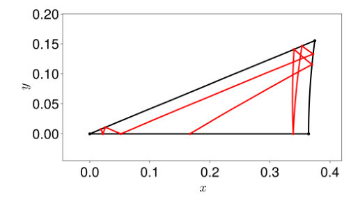
<figcaption class="paper-figure-caption"><b>Fig 2.</b> FIG. 2 Example classical trajectory in Schmit’s hyper- bolic triangle. The black curve shows the billiard bound- ary in the Poincar´e disk model, and the red arcs show several specular reflections of a geodesic trajectory. The two sides emanating from the origin are radial geodesics, while the third side is a circular arc orthogonal to the unit disk boundary.</figcaption>
</figure>
<figure class="paper-figure-card">

<figcaption class="paper-figure-caption"><b>Fig 3.</b> FIG. 3 Deviation of the numerical counting function from the Weyl law (14). The fluctuations remain cen- tered around zero and show no systematic drift, indi- cating that the computed spectra are complete on the plotted intervals. For ϵ = 10−4, the fluctuations decrease after approximately k ≃3000 (red vertical line in panel c)), consistent with the simultaneous approach of the lo- cal spacing statistics and the sliding–window average gap ratio towards GOE as seen in Fig.8.</figcaption>
</figure>
<figure class="paper-figure-card">
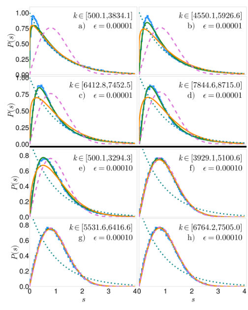
<figcaption class="paper-figure-caption"><b>Fig 4.</b> FIG. 4 Nearest-neighbour spacing distributions for the weak perturbations ϵ = 10−5 and ϵ = 10−4, shown in four spectral windows for each perturbation. Panels (a)– (d) correspond to ϵ = 10−5 with k ∈[500.1, 3834.1], k ∈[4550.1, 5926.6], k ∈[6412.8, 7452.5], and k ∈ [7844.6, 8715.0], respectively. Each of these panels con- tains 1.5 × 105 consecutive eigenvalues, corresponding to 149999 unfolded spacings. Panels (e)–(h) correspond to ϵ = 10−4 with k ∈[500.1, 3294.3], k ∈[3929.1, 5100.6], k ∈[5531.6, 6416.6], and k ∈[6764.2, 7505.0], respec- tively. Each of these panels contains 1.1 × 105 consecu- tive eigenvalues, corresponding to 109999 unfolded spac- ings. The blue histograms show the...</figcaption>
</figure>
<figure class="paper-figure-card">
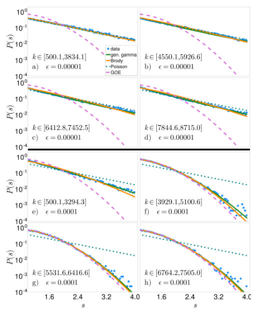
<figcaption class="paper-figure-caption"><b>Fig 5.</b> FIG. 5 Same nearest-neighbour spacing distributions as in Fig. 4, shown on a logarithmic vertical scale to empha- size the large-spacing tail. Panels (a)–(d) correspond to ϵ = 10−5 with k ∈[500.1, 3834.1], k ∈[4550.1, 5926.6], k ∈ [6412.8, 7452.5], and k ∈ [7844.6, 8715.0], re- spectively, each using 1.5 × 105 consecutive eigenvalues (149999 unfolded spacings). Panels (e)–(h) correspond to ϵ = 10−4 with k ∈[500.1, 3294.3], k ∈[3929.1, 5100.6], k ∈ [5531.6, 6416.6], and k ∈ [6764.2, 7505.0], re- spectively, each using 1.1 × 105 consecutive eigenvalues (109999 unfolded spacings). For ϵ = 10−5, the tail re- mains close to exponential over much of the accessible range. For ϵ = 10−4, the tail...</figcaption>
</figure>
</div>
<p><strong>Summary.</strong> This work analyzes the emergence of quantum chaos in hyperbolic billiards by perturbing an initially arithmetic system. The authors show a clear crossover from Poisson statistics to GOE behavior in both eigenvalue spacing and eigenfunction localization measures. This provides a comprehensive, combined spectral and wave-function view of how symmetries break down into generic chaotic dynamics.</p>
<p><strong>Why it may be interesting.</strong> It provides a detailed, quantitative picture of quantum chaos transitions in non-Euclidean geometries, linking number theory (arithmetic billiards) directly to universal random matrix theory predictions (GOE).</p>
<details>
<summary>Detailed structure</summary>
<p><strong>Main problem.</strong> The study investigates how generic quantum chaos emerges from an arithmetic billiard defined on the hyperbolic plane when subjected to small geometric perturbations.</p>
<p><strong>Main result.</strong> Both spectral statistics and eigenfunction localization measures exhibit a measurable crossover from Poisson-like (arithmetic) behavior towards Gaussian Orthogonal Ensemble (GOE) statistics, characterized by a common power-law decay in their respective widths.</p>
<p><strong>Method.</strong> The analysis combines spectral theory (analyzing nearest-neighbor spacing distributions) with eigenfunction analysis using Poincaré–Husimi representations and entropy measures on the boundary phase space.</p>
<p><strong>Model / system.</strong> The system is a quantum billiard defined by the Laplace–Beltrami operator on a hyperbolic domain, specifically starting from an arithmetic triangle (Schmit triangle) in the Poincaré disk model. Small area-preserving perturbations are introduced to break the initial arithmetic symmetries.</p>
<p><strong>Key observables.</strong> Nearest-neighbor spacing distribution ($P(s)$), spectral rigidity, localization entropy width ($\sigma_{	ext{Beta}}$), and the crossover scale of these statistics.</p>
<p><strong>Important parameters / regimes.</strong> The perturbation strength ($\epsilon$), which controls the transition from Poisson to GOE behavior; the wavenumber ($k$).</p>
<p><strong>Assumptions / limitations.</strong> The generalized-gamma fit is used only as a diagnostic tool, not as a universal law. The analysis relies on comparing results across different levels of perturbation strength.</p>
<p><strong>Figures summary.</strong> Figures illustrate the hyperbolic tessellation and show convergence behavior related to computational parameters like points-per-wavelength; tables list specific perturbation values ($\epsilon$) and resulting changes in arclength ($L$).</p>
<p><strong>Paper structure.</strong> The paper progresses from defining the physical system (hyperbolic billiard) and its initial arithmetic state, through applying spectral analysis techniques (diagnostics for crossover), to complementing this with eigenfunction localization studies that confirm the same transition mechanism.</p>
</details>
<details>
<summary>Abstract</summary>
<p>We study the emergence of generic quantum chaos from an arithmetic billiard in the hyperbolic plane. Starting from an arithmetic triangle, we introduce small area-preserving geometric perturbations and compute long consecutive sequences of eigenvalues and eigenstates. The spectral statistics show a perturbation-dependent crossover from Poisson-like arithmetic behaviour to the Gaussian orthogonal ensemble (GOE), with the crossover scale moving to higher wavenumbers as the perturbation decreases. To characterize the nearest-neighbour spacing distribution, we compare the data with Brody and generalized-gamma fits. The generalized-gamma form is used only as a two-parameter diagnostic, allowing the small- and intermediate-spacing structure to vary independently from the large-spacing tail, rather than as a universal crossover law. For the weakest perturbation, we also compare the data with an effective block-GOE model, which diagnoses residual block-like structure deep into the computed spectral range. We complement the spectral analysis with Poincaré-Husimi representations of the eigenstates and quantify phase-space localization using an entropy-based measure. Its distribution is well described by Beta distributions whose width decays as a power law in the wavenumber. Before the spectral crossover, the localization statistics retain memory of the near-arithmetic regime. After the GOE regime is reached, the localization-fluctuation widths collapse onto a common decay law, sigma(Beta) ~ k^{-eta}, with eta approximately 0.37--0.38. These results provide a combined spectral and eigenfunction-level picture of the arithmetic-to-GOE crossover in hyperbolic quantum billiards.</p>
</details>
<p><sub><a href="#top">↑ back to top</a></sub></p>

<p><a id="paper-2607.04899"></a></p>
<h3 id="quantum-orientation-noether-structure-composition-of-systems-and-operations"><a href="http://arxiv.org/abs/2607.04899v1">Quantum orientation, Noether structure, composition of systems and operations</a></h3>
<p><strong>Authors:</strong> Heinz-Jürgen Schmidt<br>
<strong>Type:</strong> theory · <strong>Category:</strong> other · <strong>PDF:</strong> <a href="https://arxiv.org/pdf/2607.04899v1">https://arxiv.org/pdf/2607.04899v1</a><br>
<strong>Analysis basis:</strong> full PDF text, analyzed in chunks</p>
<div class="figure-strip-hint">↔ Scroll figures horizontally</div>
<div class="paper-figures-scroll">
<figure class="paper-figure-card">

<figcaption class="paper-figure-caption"><b>Fig 1.</b> Low-resolution page preview, page 2</figcaption>
</figure>
<figure class="paper-figure-card">

<figcaption class="paper-figure-caption"><b>Fig 2.</b> Low-resolution page preview, page 3</figcaption>
</figure>
<figure class="paper-figure-card">

<figcaption class="paper-figure-caption"><b>Fig 3.</b> Low-resolution page preview, page 4</figcaption>
</figure>
<figure class="paper-figure-card">
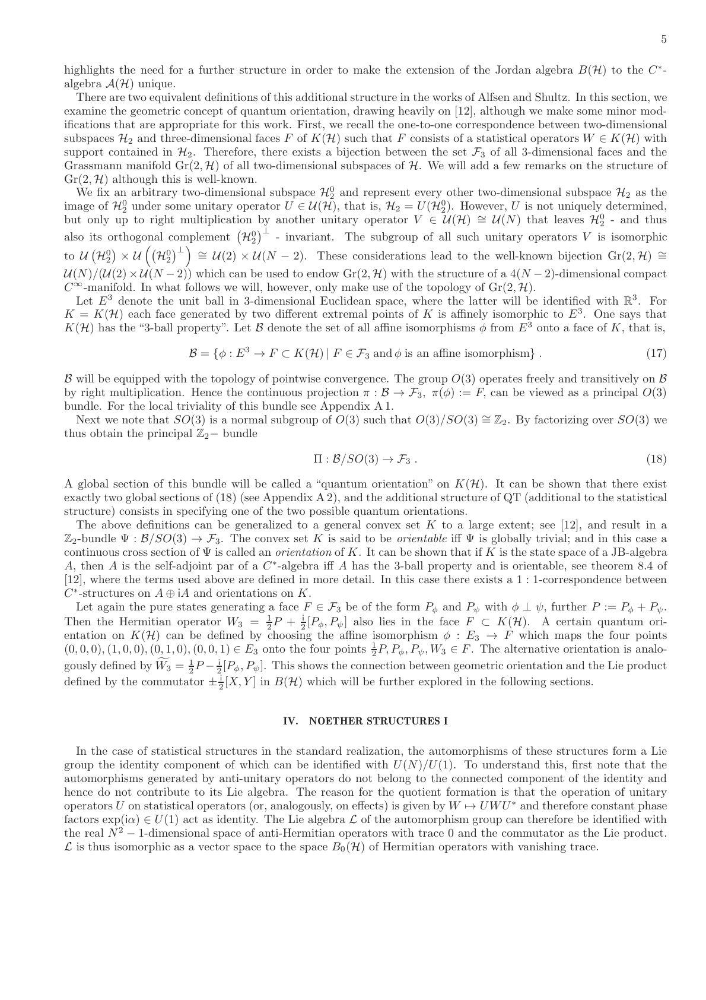
<figcaption class="paper-figure-caption"><b>Fig 4.</b> Low-resolution page preview, page 5</figcaption>
</figure>
<figure class="paper-figure-card">
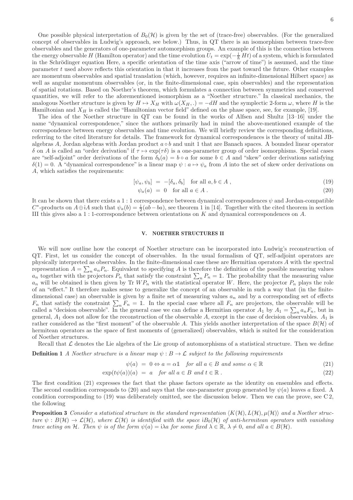
<figcaption class="paper-figure-caption"><b>Fig 5.</b> Low-resolution page preview, page 6</figcaption>
</figure>
</div>
<p><strong>Summary.</strong> This theoretical paper investigates the fundamental axioms governing quantum theory, arguing that a 'Noether structure' is necessary alongside statistical rules to properly describe composite systems. Using advanced mathematics involving principal bundles and geometric invariants, the authors prove that the composition of subsystems is not uniquely determined by standard axioms alone. The work establishes deep mathematical constraints on the very foundations of quantum mechanics.</p>
<p><strong>Why it may be interesting.</strong> This work tackles the foundational structure of quantum mechanics itself, providing deep mathematical constraints on how physical processes like composition and evolution must be mathematically formulated beyond standard state/effect descriptions.</p>
<details>
<summary>Detailed structure</summary>
<p><strong>Main problem.</strong> The paper argues that quantum theory requires a structure beyond mere statistical description—the 'Noether structure'—to correctly model system composition and define completely positive operations.</p>
<p><strong>Main result.</strong> The statistical structure alone is insufficient to uniquely determine the composition of composite quantum systems, necessitating the inclusion of this additional Noether structure or 'quantum orientation'.</p>
<p><strong>Method.</strong> The analysis uses axiomatic comparisons between standard quantum probability structures ($\langle K, L, \mu 
angle$) and requirements for tensor product decomposition, supplemented by advanced geometric tools involving principal bundles and $Z_2$-bundles.</p>
<p><strong>Model / system.</strong> The focus is on the foundational axioms of Quantum Theory (QT) applied to finite-dimensional Hilbert spaces ($H$), considering the composition of two subsystems ($\mathcal{H}_1 \otimes \mathcal{H}_2$).</p>
<p><strong>Key observables.</strong> Statistical structure $\langle K, L, \mu 
angle$, observables, and the resulting 'quantum orientation' defined geometrically.</p>
<p><strong>Important parameters / regimes.</strong> Finite dimensionality ($N$), the specific choice of product structures ($\mu_{12} = \mu_1 \mu_2$), and geometric invariants related to $O(3)$ bundles.</p>
<p><strong>Assumptions / limitations.</strong> The analysis is strictly limited to the finite-dimensional case, and certain proofs rely on assumptions about the rank or number of terms in quantum operations ($n>1$).</p>
<p><strong>Figures summary.</strong> Figure 1 sketches a principal O(3)-bundle $\pi: B 	o F_3$ and its inverse image $\pi^{-1}(MF)$, illustrating the geometric framework used for defining global sections.</p>
<p><strong>Paper structure.</strong> The paper progresses from identifying the insufficiency of statistical structure (Chunk 1) to demonstrating non-uniqueness in composition axioms (Chunk 2). It then employs advanced differential geometry (principal bundles, $Z_2$-bundles) to define necessary global structures (Chunk 3), concluding with a detailed analysis of pure quantum operations using rank arguments (Chunk 4).</p>
</details>
<details>
<summary>Abstract</summary>
<p>In this paper we argue that, in addition to the statistical structure of quantum theory, another structure, referred to here as the ``Noether structure," is necessary to describe the composition of systems and to define completely positive operations. A Noether structure reflects the dual role of Hermitian operators as observables on the one hand and as generators of symmetry transformations on the other. This idea has been expressed in a similar form in the works of Alfsen and Shultz, who investigated the conditions under which the Jordan product can be extended to an associative product of operator algebras. Our investigations into the Noether structure and the composition of systems are limited to the finite-dimensional case and establish a connection to completely positive operations. In the case of pure operations, the latter can be characterized as orientation-preserving maps.</p>
</details>
<p><sub><a href="#top">↑ back to top</a></sub></p>

<p><a id="paper-2607.04538"></a></p>
<h3 id="security-of-quantum-conference-key-agreement-with-two-way-classical-communication"><a href="http://arxiv.org/abs/2607.04538v1">Security of Quantum Conference Key Agreement with Two-Way Classical Communication</a></h3>
<p><strong>Authors:</strong> Shun Kawakami, Mori Watanabe, Takuya Ikuta, Koichi Takasugi<br>
<strong>Type:</strong> theory · <strong>Category:</strong> quantum information and computing · <strong>PDF:</strong> <a href="https://arxiv.org/pdf/2607.04538v1">https://arxiv.org/pdf/2607.04538v1</a><br>
<strong>Analysis basis:</strong> full PDF text, analyzed in chunks</p>
<div class="figure-strip-hint">↔ Scroll figures horizontally</div>
<div class="paper-figures-scroll">
<figure class="paper-figure-card">
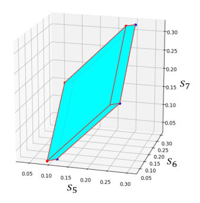
<figcaption class="paper-figure-caption"><b>Fig 1.</b> FIG. 1. An example of the physically realizable region Tphys in the (s5, s6, s7) parameter space. Eqs. (30)–(32) define the interior of the parallelepiped. In this example, the boundary corresponding to Eq. (33) lies outside the parallelepiped.</figcaption>
</figure>
<figure class="paper-figure-card">

<figcaption class="paper-figure-caption"><b>Fig 2.</b> FIG. 2. The triangular pyramid Tpyramid defined in the s5, s6, s7 parameter space by the constraints Eq. (23), Eq. (25), Eq. (27). The corner of the pyramid corresponds to the upper-right corner of the parallelepiped in Fig. 1. (a) The edge unit vectors (covariant vectors) {ei} , the peak point S, the worst point P and the worst point P′ within Tpyramid. (b) The contravariant vectors {ei}.</figcaption>
</figure>
<figure class="paper-figure-card">

<figcaption class="paper-figure-caption"><b>Fig 3.</b> FIG. 3. Threshold curves (sZ, sX) for non-negative secure key rate R under the symmetric setting s1 = sX and s2 = s3 = s4 = sZ, with error- correction efficiency f = 1. The solid curves correspond to 0, 1, 2, 3, 4, and 5 applications of the B-step (from lower left to upper right). The region below each curve yields a non-negative secure key rate. The dashed curve shows the threshold obtained by using the previous analysis of a single B-step [14], and the dotted line indicates sZ + sX = 1/2, corresponding to the condition in Theorem 1. Repeated applications of the B-step significantly improve the threshold; in particular, along the symmetric line sZ = sX, the tolerable error rate increases...</figcaption>
</figure>
</div>
<p><strong>Summary.</strong> This paper enhances the security analysis of Quantum Conference Key Agreement (QCKA) using GHZ states. By incorporating multiple rounds of two-way classical communication steps (B-steps and P-steps), the authors analytically prove that the tolerable error threshold can be substantially increased beyond previous limits. This work is crucial for realizing robust, practical quantum networks.</p>
<p><strong>Why it may be interesting.</strong> It provides rigorous theoretical advancements in quantum network security protocols, directly impacting the feasibility of multi-user quantum communication systems by quantifying error tolerance improvements.</p>
<details>
<summary>Detailed structure</summary>
<p><strong>Main problem.</strong> The paper analyzes the asymptotic security of Quantum Conference Key Agreement (QCKA) for multiple users, focusing on improving the tolerable error threshold in practical implementations.</p>
<p><strong>Main result.</strong> Iterative application of two-way classical communication steps (B-steps and P-steps) can increase the tolerable error threshold beyond 20%, significantly enhancing protocol robustness.</p>
<p><strong>Method.</strong> The authors derive the secure key rate analytically by optimizing over physically realizable error rates, incorporating iterative updates for parameter estimation.</p>
<p><strong>Model / system.</strong> The system models QCKA using tripartite Greenberger-Horne-Zeilinger (GHZ) states and two complementary measurement bases (Z and X). The security analysis is asymptotic ($N 	o \infty$).</p>
<p><strong>Key observables.</strong> Secure key rate ($R$), error rates ($s_1, s_2, s_3, s_4$, etc.), and the tolerable error threshold.</p>
<p><strong>Important parameters / regimes.</strong> The optimization involves maximizing over multiple interconnected error parameters subject to physical constraints defining a realizable parameter space.</p>
<p><strong>Assumptions / limitations.</strong> Assumes IID eavesdropping interaction; the analysis is asymptotic; specific bounds on error rates ($s_i < 1/2$) are used throughout the derivation.</p>
<p><strong>Paper structure.</strong> The paper systematically analyzes the security by first establishing the key rate formula, then deriving and optimizing the parameter updates for multiple B-steps and P-steps, and finally verifying that the resulting analytical solutions satisfy all necessary physical constraints across different geometric regimes.</p>
</details>
<details>
<summary>Abstract</summary>
<p>Quantum conference key agreement (QCKA) enables multiple users to establish a common secret key with information-theoretic security and is regarded as a key primitive for secure communication in future quantum networks. However, practical implementations of QCKA typically suffer from higher noise levels than conventional bipartite quantum key distribution (QKD), making the improvement of the tolerable error threshold an important challenge. Gottesman and Lo proposed two preprocessing procedures for QKD with two-way classical communication, known as the B-step and the P-step, which enhance the tolerable error threshold. In this paper, we analyze the asymptotic security of QCKA with tripartite GHZ states and two measurement bases using two-way classical communication, including multiple B-steps and P-steps. We derive the corresponding secure key rate analytically and demonstrate that iterative B-steps can increase the tolerable error threshold beyond 20%, significantly improving upon the approximately 11% threshold achievable without two-way classical communication and the approximately 15% threshold obtained with only a single B-step. Our results show that two-way classical communication can substantially enhance the robustness of practical QCKA protocols.</p>
</details>
<p><sub><a href="#top">↑ back to top</a></sub></p>
</details>
<h2 id="secondary-cond-mat-archives">Secondary cond-mat archives</h2>
<p><em>Papers from cond-mat.mtrl-sci, mes-hall, other, soft, supr-con. These archives are de-prioritized — they appear at the end regardless of relevance score.</em></p>
<h3 id="relevant-in-secondary-archives-35">Relevant in secondary archives (35)</h3>

<p><a id="paper-2607.03961"></a></p>
<h3 id="spin-momentum-locking-of-polariton-edge-states-in-honeycomb-lattices"><a href="http://arxiv.org/abs/2607.03961v1">Spin-momentum locking of polariton edge states in honeycomb lattices</a></h3>
<p><strong>Authors:</strong> Andrea Herrero Otermin, Nicola Carlon Zambon, Dheerendra Singh, Neha Bhoria, Rimi Banerjee, Christian Mayer, Simon Betzold, Siddhartha Dam, Monika Emmerling, Sven Höfling, Luis Viña, Subhaskar Mandal, Carlos Antón-Solanas<br>
<strong>Type:</strong> both · <strong>Category:</strong> other · <strong>PDF:</strong> <a href="https://arxiv.org/pdf/2607.03961v1">https://arxiv.org/pdf/2607.03961v1</a><br>
<strong>Analysis basis:</strong> full PDF text, analyzed in chunks
<strong>Topic relevance:</strong> 🔥 <code>spintronics-quantum-optics interface</code> <strong>5/5</strong> · 🔥 <code>analog quantum simulation</code> <strong>4/5</strong> · 🔥 <code>exotic spin models in light-matter</code> <strong>4/5</strong> · <code>correlated cavity matter</code> <strong>3/5</strong> · <code>driven-dissipative phase transition</code> <strong>3/5</strong> · <code>quantum optics experiment</code> <strong>3/5</strong> · <code>non-equilibrium dynamics</code> <strong>2/5</strong> · <code>Tavis-Cummings &amp; cavity-many-emitter</code> <strong>1/5</strong> · <code>interference shaping light</code> <strong>1/5</strong> · <code>methods for driven-dissipative</code> <strong>1/5</strong> · <code>non-equilibrium universality</code> <strong>1/5</strong></p>
<div class="figure-strip-hint">↔ Scroll figures horizontally</div>
<div class="paper-figures-scroll">
<figure class="paper-figure-card">

<figcaption class="paper-figure-caption"><b>Fig 1.</b> FIG. 1. Spin-momentum locking of zigzag edges states in a honeycomb lattice. Scanning electron microscopy (SEM) image of a zigzag edge in a honeycomb polariton lat- tice. The unit-cell size, a, is indicated by a double-headed arrow. The red circle marks the size and position of the exci- tation laser spot. The x −y coordinate axes are shown in the upper-right corner of the panel. (b) Simulation of the pro- jected band structure for a unit cell containing a zigzag edge, the bands encode the circular polarization in a false color scale, showing that the bulk modes remain linearly polarized, while the left- and right-propagating zigzag edge modes ex- hibit opposite spin polarization. The...</figcaption>
</figure>
<figure class="paper-figure-card">
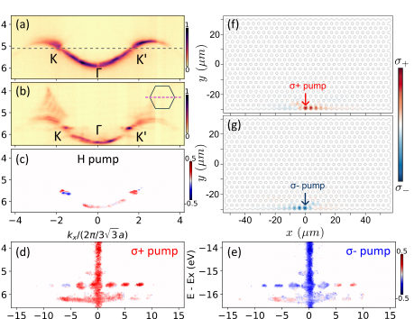
<figcaption class="paper-figure-caption"><b>Fig 2.</b> FIG. 2. Experimental observation of SML in a ZES of a normal honeycomb lattice: linear regime. (a)/(b) PL intensity map of the dispersion relation of the honey- comb lattice measured in the bulk/along the zigzag edge. The dashed line indicates the energy of the Dirac points. The in- set schematically indicates the momentum-space cut across the Brillouin zone. (c) S3 map of the dispersion relation along the zigzag edge under horizontally polarized nonres- onant excitation, showing opposite circular polarization for counter-propagating ZES at K and K′. (d,e) S3 map of the energy- and real space-resolved emission measured un- der right- and left-circularly polarized excitation, respectively,...</figcaption>
</figure>
<figure class="paper-figure-card">
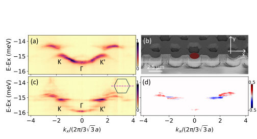
<figcaption class="paper-figure-caption"><b>Fig 3.</b> FIG. 3. Experimental observation of SML in ZES of a stretched honeycomb lattice: linear regime. (a) PL intensity map of the dispersion relation of the lattice in the bulk: a gap emerges in the Dirac points. (b) SEM image of the zigzag edge. (c) Dispersion relation measured along the zigzag edge. (d) Corresponding S3 map of the dispersion re- lation along the zigzag edge under horizontally polarized non- resonant excitation. The SML directionality is reversed with respect to the normal honeycomb lattice. The experimental figures have been acquired in the linear regime (P=0.08 mW), with an laser spot matching the pillar diameter as indicated in panel (b).</figcaption>
</figure>
<figure class="paper-figure-card">

<figcaption class="paper-figure-caption"><b>Fig 4.</b> FIG. 4. SML lasing from ZES in a stretched honey- comb lattice. (a) Power-dependent emission intensity (green points) showing the nonlinear threshold behavior (Pth = 21.5 mW, with an elliptical laser spot covering six pillars along the edge) and line narrowing (pink points) associated with polariton lasing in the edge-state modes. (b,c) PL inten- sity map of the dispersion relation along the ZES for pump powers P=0.005Pth/1.95Pth, respectively. (d,e) Spatially and energy-resolved PL intensity map of the ZES under σ±-circularly polarized excitation, respectively, in the lasing regime (P=1.95Pth). The dashed boxes highlight the prop- agating direction of the edge-state lasing emission under σ±</figcaption>
</figure>
</div>

<p><strong>Summary.</strong> This research demonstrates spin-momentum locking of polariton edge states within honeycomb lattices using semiconductor microcavities. By exploiting the effective spin-orbit coupling inherent to these photonic structures, the authors show that the polarization handedness locks to the direction of propagation. Crucially, they achieve all-optical control by inducing directional lasing whose preferred direction can be switched simply by changing the circular polarization of the pump light.</p>
<p><strong>Why it may be interesting.</strong> This work bridges concepts from topological physics (edge states), condensed matter magnetism/spintronics (spin-momentum locking), and quantum optics (polaritons). The ability to achieve spin control purely optically in a solid-state cavity platform is highly relevant for developing novel quantum light sources or information carriers.</p>
<details>
<summary>Detailed structure</summary>
<p><strong>Main problem.</strong> The research aims to demonstrate spin-momentum locking (SML) of polariton edge states and establish an all-optical method for controlling the direction of propagation in these systems without external magnetic fields.</p>
<p><strong>Main result.</strong> SML is experimentally confirmed in zigzag edge states, showing that their polarization handedness locks to the propagation direction. Furthermore, spin-selective gain allows for switching the lasing direction purely by changing the pump helicity.</p>
<p><strong>Method.</strong> The study combines experimental measurements using full Stokes polarimetry and $\mu$-photoluminescence with theoretical modeling based on an effective TE-TM Hamiltonian derived from microcavity physics.</p>
<p><strong>Model / system.</strong> The physical system is excitonic-polariton honeycomb lattices realized in GaAs-based semiconductor microcavities, which serve as a photonic analogue of graphene. The mechanism relies on the effective spin-orbit coupling induced by TE/TM splitting in dielectric-mirror cavities.</p>
<p><strong>Key observables.</strong> Elliptical polarization handedness (circular polarization $S_3$) that reverses sign upon momentum reversal ($S_3(k_x) = -S_3(-k_x)$), and spin-selective lasing emission based on pump helicity ($\sigma^+$ vs $\sigma^-$).</p>
<p><strong>Important parameters / regimes.</strong> The system operates in the polariton regime, utilizing gap opening via stretched lattices to spectrally isolate edge modes from the bulk continuum.</p>
<p><strong>Assumptions / limitations.</strong> The SML effect is attributed intrinsically to the evanescent nature of the edge states and the photonic SOC, distinguishing it from previous strain-induced effects.</p>
<p><strong>Figures summary.</strong> Figures illustrate SEM images of zigzag edge states (ZES), polarization maps showing opposite handedness for counter-propagating ZES in both regular and stretched lattices, and power-dependent emission confirming spin-selective lasing above threshold.</p>
<p><strong>Paper structure.</strong> The paper establishes the theoretical basis using the TE-TM Hamiltonian to predict SML. It then presents experimental verification of this locking in a normal honeycomb lattice via polarization measurements. Finally, it enhances control by fabricating a stretched lattice to open a gap and demonstrate all-optical switching of directional lasing based on pump helicity.</p>
</details>
<details>
<summary>Abstract</summary>
<p>Transverse-electric/Transverse-magnetic splitting in dielectric-mirror microcavities introduces an effective spin-orbit coupling for photons. While the bulk states remain linearly polarized, for exponentially localized edge states in a photonic lattice, this coupling induces elliptical polarization whose handedness is locked to the propagation direction, analogous to the transverse spin of evanescent electromagnetic waves. We reveal spin-momentum locking through Stokes polarimetry of zigzag edge states in a honeycomb exciton-polariton lattice. The effect persists in a stretched honeycomb supporting a photonic bandgap, where spin-polarized carrier injection enables selective lasing of either chiral edge states. Our results provide a route toward ultrafast spin-controlled unidirectional propagation in polariton systems without external magnetic fields.</p>
</details>
<p><sub><a href="#top">↑ back to top</a></sub></p>

<p><a id="paper-2607.04968"></a></p>
<h3 id="lindblad-theory-of-linear-response-susceptibility-and-dispersive-readout-in-minimal-kitaev-junctions"><a href="http://arxiv.org/abs/2607.04968v1">Lindblad theory of linear response susceptibility and dispersive readout in minimal Kitaev junctions</a></h3>
<p><strong>Authors:</strong> Tobias Kuhn, Raffael L. Klees, Ramón Aguado, Mónica Benito<br>
<strong>Type:</strong> theory · <strong>Category:</strong> quantum information and computing · <strong>PDF:</strong> <a href="https://arxiv.org/pdf/2607.04968v1">https://arxiv.org/pdf/2607.04968v1</a><br>
<strong>Analysis basis:</strong> full PDF text, analyzed in chunks
<strong>Topic relevance:</strong> 🔥 <code>methods for driven-dissipative</code> <strong>4/5</strong> · <code>Keldysh / 2PI / non-Gaussian methods</code> <strong>3/5</strong> · <code>correlated / nonlocal dissipation</code> <strong>3/5</strong> · <code>driven-dissipative phase transition</code> <strong>3/5</strong> · <code>QC/QI experiment</code> <strong>2/5</strong> · <code>non-equilibrium dynamics</code> <strong>2/5</strong> · <code>non-equilibrium universality</code> <strong>2/5</strong> · <code>spintronics-quantum-optics interface</code> <strong>2/5</strong> · <code>Kondo &amp; dissipative impurity</code> <strong>1/5</strong> · <code>analog quantum simulation</code> <strong>1/5</strong> · <code>correlated cavity matter</code> <strong>1/5</strong> · <code>measurement-induced transitions</code> <strong>1/5</strong> · <code>quantum measurements</code> <strong>1/5</strong></p>
<div class="figure-strip-hint">↔ Scroll figures horizontally</div>
<div class="paper-figures-scroll">
<figure class="paper-figure-card">

<figcaption class="paper-figure-caption"><b>Fig 1.</b> FIG. 1. We introduce a parameter fluctuation δf(t) into a system that interacts with a Markovian bath. System and environmental dynamics due to absorption, emission and de- phasing will be read out in observable A.</figcaption>
</figure>
<figure class="paper-figure-card">

<figcaption class="paper-figure-caption"><b>Fig 2.</b> FIG. 2. Common gate spectroscopy on a minimal Kitaev chain. (a) Two quantum dots with onsite energies µ1 and µ2 are proximitized by a superconductor. Induced crossed Andreev reflection ∆and direct elastic cotunneling t mediate the hopping between the dots. (b) Energy spectrum E and quantum capacitance CQ (normalized by its maximal value |CQ|max) in the odd- and even-parity subspaces as a function of the average onsite energy µ = (µ1 + µ2)/2. (c) Modulus of the total susceptibility |χ| from Eq. (6) for different probe frequencies ω and average onsite energies µ. A resonant regime at ω ≈ωr and a dispersive regime at ω ≈ωd emerge. (d-g) Imaginary and real part of the total susceptibility χ and...</figcaption>
</figure>
<figure class="paper-figure-card">
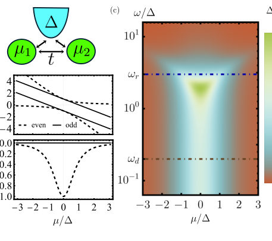
<figcaption class="paper-figure-caption"><b>Fig 3.</b> Fig. 2f shows the imaginary part of the susceptibility in the dispersive regime (ωd ≪ϵ). Both Hermes and Hamil- tonian contributions are small (O(ω/ϵ)) and for ΓT2 ≪ϵ they are related via Im[χL,DB(ωd)] ≃−Im[χH(ωd)]/2. At higher temperatures, the Sisyphus term becomes dom- inant and leads to the double-peak structure. In Fig 2g, we compare the quantum capacitance, which measures the band curvature, with the real part of the total sus- ceptibility. Since Re[χL,DB(ωd)] ≃Γ2 T2 Re[χH(ωd)]/ϵ2, the contribution χL compensates for the decoherence on χH. By explicitly rearranging the Hermes and Hamiltonian contributions according to Eq. (C4), we see that</figcaption>
</figure>
<figure class="paper-figure-card">

<figcaption class="paper-figure-caption"><b>Fig 4.</b> FIG. 3. Susceptibility of the minimal Kitaev chain for ther- mal populations near resonance (ω ≲ϵ) for (a) real and (b) imaginary values. Real valued susceptibility when (c) the ground state is fully populated or (d) the excited state is fully populated. χL,BT refers to the beyond thermalization terms of Hermes contribution while χL,DB denotes detailed balance terms. Other parameters are identical to Fig. 2.</figcaption>
</figure>
<figure class="paper-figure-card">

<figcaption class="paper-figure-caption"><b>Fig 5.</b> FIG. 4. (a) Two minimal Kitaev chains tunnel coupled with tJ form a Kitaev-Josephson Junction (KJJ). The supercon- ducting leads have a phase difference of ϕ. (b) Common gate spectrum for decoupled (green, dashed) and coupled (salmon, solid) KJJ in even global parity at ϕ = π and ∆= t. |E±/O±, E±/O±⟩are many-body eigenstates of the decoupled minimal Kitaev chains corresponding to local even/odd par- ity. At ϕ = π, coupled KJJ eigenstates follow these states up to first order in tJ, see Eqs. (E14) (c) Flux spectrum comparing sweet spot ∆= t (salmon, solid) with a detuned ∆= 1.1t (purple, dashed) system at µ = 0. The states the |↑/↓⟩= |E−, E−⟩± |O−, O−⟩+ O(tJ) correspond to the (anti-...</figcaption>
</figure>
</div>

<p><strong>Summary.</strong> The paper introduces a novel Lindblad-based linear response formalism to analyze complex superconducting quantum dot devices. It extends beyond standard Kubo treatments by incorporating Sisyphus and Hermes susceptibilities, which account for finite-frequency, non-unitary environmental effects. This framework is vital for accurately modeling qubit readout in topological systems like Kitaev junctions.</p>
<p><strong>Why it may be interesting.</strong> This work provides advanced tools for analyzing open quantum systems relevant to solid-state qubits, extending standard linear response theory to account for non-unitary dissipation effects crucial for accurate device characterization.</p>
<details>
<summary>Detailed structure</summary>
<p><strong>Main problem.</strong> Developing a comprehensive theoretical framework to understand the response of hybrid superconductor-semiconductor quantum dots (SCQDs) to external probes, including readout and environmental dissipation.</p>
<p><strong>Main result.</strong> The formalism successfully captures Sisyphus and Hermes dynamical susceptibilities, which are non-unitary effects absent in standard Kubo treatments, showing that Hermes terms can compensate decoherence in dispersive readout.</p>
<p><strong>Method.</strong> A Lindblad-based linear response formalism is employed to calculate the total susceptibility by decomposing it into four contributions ($\chi_{st}, \chi_H, \chi_\Gamma, \chi_L$).</p>
<p><strong>Model / system.</strong> The study uses minimal Kitaev junctions (MKCs) hosting topologically protected Majorana-based parity qubits within hybrid SCQD devices.</p>
<p><strong>Key observables.</strong> Linear response susceptibility $\chi(\omega)$, Quantum Capacitance ($    ext{CQ}$), and the distinct Sisyphus ($\chi_\Gamma$) and Hermes ($\chi_L$) susceptibilities.</p>
<p><strong>Important parameters / regimes.</strong> The energy gap ($\epsilon$), onsite potentials ($\mu$), and coupling strengths ($\Delta, t$).</p>
<p><strong>Assumptions / limitations.</strong> Approximations include Born-Markov approximations (weakly coupled environment) and assuming a time-independent reference state $
ho$.</p>
<p><strong>Figures summary.</strong> Figures illustrate the decomposition of susceptibility contributions ($\chi_{st}, \chi_H, \chi_\Gamma, \chi_L$) in various coupling regimes, comparing theoretical predictions to band curvature estimates.</p>
<p><strong>Paper structure.</strong> The paper introduces the Lindblad formalism for response theory, details the calculation and physical origin of Sisyphus and Hermes terms, applies this framework to Kitaev junctions, and analyzes specific measurements like dispersive readout and common gate spectroscopy.</p>
</details>
<details>
<summary>Abstract</summary>
<p>The field of hybrid superconductor-semiconductor quantum dots is advancing toward the development of functional devices that leverage the advantages of both types of materials. However, the inherent complexity of these devices demands a comprehensive theoretical framework for a complete understanding of their responses to external probes, readout and the dissipation arising from environmental coupling. We present a Lindblad-based linear response formalism that captures the multi-level nature of these devices, their probe-readout flexibility, and the non-unitary effects of finite-frequency response, including the so-called Sisyphus and Hermes dynamical susceptibilities. These arise from fluctuations in the rates and jump operators, and are hence absent in standard Kubo linear response treatments. We exemplify the framework using quantum dot-based Kitaev chain setups which are promising candidates for topologically protected Majorana-based parity qubits. Our results shed light onto the validity of the standard curvature-based approximation for fermionic parity and qubit readout, show that Hermes terms compensate decoherence in dispersive readout and implement important corrections beyond thermalized states.</p>
</details>
<p><sub><a href="#top">↑ back to top</a></sub></p>

<p><a id="paper-2607.05066"></a></p>
<h3 id="finite-frequency-magnetic-common-baths-in-ferromagnetic-planar-cavities"><a href="http://arxiv.org/abs/2607.05066v1">Finite-frequency magnetic common baths in ferromagnetic planar cavities</a></h3>
<p><strong>Authors:</strong> O. J. Kwon<br>
<strong>Type:</strong> theory · <strong>Category:</strong> other · <strong>PDF:</strong> <a href="https://arxiv.org/pdf/2607.05066v1">https://arxiv.org/pdf/2607.05066v1</a><br>
<strong>Analysis basis:</strong> full PDF text, analyzed in chunks
<strong>Topic relevance:</strong> 🔥 <code>spintronics-quantum-optics interface</code> <strong>4/5</strong> · <code>Keldysh / 2PI / non-Gaussian methods</code> <strong>3/5</strong> · <code>correlated / nonlocal dissipation</code> <strong>3/5</strong> · <code>exotic spin models in light-matter</code> <strong>3/5</strong> · <code>methods for driven-dissipative</code> <strong>3/5</strong> · <code>Tavis-Cummings &amp; cavity-many-emitter</code> <strong>2/5</strong> · <code>driven-dissipative phase transition</code> <strong>2/5</strong> · <code>Kondo &amp; dissipative impurity</code> <strong>1/5</strong> · <code>analog quantum simulation</code> <strong>1/5</strong> · <code>correlated cavity matter</code> <strong>1/5</strong> · <code>non-equilibrium dynamics</code> <strong>1/5</strong></p>
<div class="figure-strip-hint">↔ Scroll figures horizontally</div>
<div class="paper-figures-scroll">
<figure class="paper-figure-card">

<figcaption class="paper-figure-caption"><b>Fig 1.</b> FIG. 1. Geometry and finite-frequency common-bath mech- anism. Two probes in a vacuum gap couple to the retarded scattering magnetic Green tensor. The benchmark figures use a finite ferromagnetic film thickness t = 200 nm, a non- magnetic conducting substrate, and the zz transition-moment projection.</figcaption>
</figure>
<figure class="paper-figure-card">

<figcaption class="paper-figure-caption"><b>Fig 2.</b> FIG. 2. Finite-thickness scalar TE benchmark. (a) Finite-film TE slab amplitude for t = 200 nm, plotted as log10 |rTE| versus B and k⊥L. (b) The corresponding t →∞half-space reference. (c) A cut at B = 16.5 mT, where finite thickness reduces |rTE| relative to the half-space reference mainly at intermediate k⊥L. At large k⊥L, the finite-film and half-space curves approach each other. The plotted quantity is the reciprocal diagonal TE benchmark channel used in the numerical Green-tensor integral.</figcaption>
</figure>
<figure class="paper-figure-card">

<figcaption class="paper-figure-caption"><b>Fig 3.</b> FIG. 3. Single-spin finite-frequency kernels for the zz pro- jection of the finite-thickness scalar cavity integral. The zz projection is the component benchmark used to match the static TE normalization of Ref. [1]. Panel (a) shows the signed off-diagonal scattering kernel δγ(zz) 12 /2π on a symmetric loga- rithmic scale; solid and dashed segments denote positive and negative values. Panel (b) shows the coherent exchange shift Ωzz 12/2π. Within the cavity-scattering sector, the sign in panel (a) fixes whether the symmetric or antisymmetric branch is narrowed relative to the local background.</figcaption>
</figure>
<figure class="paper-figure-card">

<figcaption class="paper-figure-caption"><b>Fig 4.</b> FIG. 4. Ideal uniform bright-mode scale estimate at ρ = 3 µm for two effective participation numbers. Panel (a) shows the linewidth splitting (Γ+ −Γ−)/2π = 2γbr AB/2π, with dotted horizontal lines marking the ±1 Hz reference level. Panel (b) shows the bright-mode coherent shift Ωbr AB/2π for the same participation numbers.</figcaption>
</figure>
<figure class="paper-figure-card">

<figcaption class="paper-figure-caption"><b>Fig 5.</b> FIG. 6. Component-normalized transverse-average bench- mark for the finite-thickness scalar cavity integral. Panel (a) shows the signed off-diagonal scattering kernel δγ(⊥) 12 /2π for the projection m2 c(Gsc BB,xx + Gsc BB,yy)/2 on a symmetric loga- rithmic scale; dashed segments denote negative values. Panel (b) shows Ω⊥ 12/2π for the same projection. The magnitudes are comparable to the zz benchmark, while the sign is re- versed over the plotted range because the tensor is projected onto the in-plane spin-flip subspace.</figcaption>
</figure>
</div>

<p><strong>Summary.</strong> This theoretical paper models the dynamic magnetic coupling (common bath) between two spin probes embedded in a ferromagnetic planar cavity. It calculates frequency-dependent decay ($\gamma_{12}$) and Lamb shift ($\Omega_{12}$) kernels using macroscopic QED formalism. The results provide quantitative, finite-frequency predictions for spin interactions that can be compared to static measurements.</p>
<p><strong>Why it may be interesting.</strong> This work directly addresses open quantum systems dynamics by modeling dissipation and coherent shifts in solid-state magnetic environments, which is crucial for understanding spin coherence in nanoscale devices.</p>
<details>
<summary>Detailed structure</summary>
<p><strong>Main problem.</strong> The paper formulates and evaluates the finite-frequency magnetic common bath experienced by two spin probes situated within a ferromagnetic planar cavity.</p>
<p><strong>Main result.</strong> For a representative film, the off-diagonal linewidth splitting reaches about two thirds of the single-spin scattering linewidth on resonance, providing dynamic counterparts to static coupling shifts.</p>
<p><strong>Method.</strong> The analysis uses macroscopic QED techniques involving the retarded magnetic Green tensor ($\mathbf{G}_{	ext{BB}}$) projected onto the scalar TE channel to derive common-bath kernels ($\gamma_{12}$ and $\Omega_{12}$).</p>
<p><strong>Model / system.</strong> The system consists of two spin probes coupled via a body-assisted magnetic reservoir within a ferromagnetic planar cavity of finite thickness ($t=200$ nm) on a nonmagnetic substrate.</p>
<p><strong>Key observables.</strong> Common-bath kernels ($\gamma_{12}$ and $\Omega_{12}$), linewidth splitting, and collective Lamb shift.</p>
<p><strong>Important parameters / regimes.</strong> Finite film thickness ($t$), operating frequency in the GHz range at millikelvin temperatures, and the magnetic input characterized by $\mu_{\perp}(\omega, B)$.</p>
<p><strong>Assumptions / limitations.</strong> The model uses a scalar TE channel approximation, neglecting TE–TM conversion and nonreciprocal off-diagonal Polder response.</p>
<p><strong>Figures summary.</strong> Figures illustrate the geometry of two probes coupled to the magnetic reservoir and compare finite-thickness calculations against static image-series benchmarks for the scattering Green tensor components.</p>
<p><strong>Paper structure.</strong> The paper develops the theory by formulating the interaction via the retarded magnetic Green tensor, calculates the coupling kernels ($\gamma_{12}, \Omega_{12}$) using the TE channel approximation, and compares the finite-frequency results to established static limits ($\omega 	o 0$).</p>
</details>
<details>
<summary>Abstract</summary>
<p>We formulate the finite-frequency magnetic common bath of two spin probes in a ferromagnetic planar cavity. The probes couple to the retarded magnetic Green tensor of the cavity, whose imaginary and real parts determine the collective decay kernel \(γ_{12}\) and the Lamb-shift kernel \(Ω_{12}\). We evaluate these kernels for a finite-thickness scalar TE channel formed by a ferromagnetic film on a nonmagnetic conducting substrate, using the transverse diagonal Polder permeability \(μ_\perp(ω,B)\) as the magnetic input. The normalization is fixed by the free-space magnetic-dipole decay rate. In the \(ω\to0\) limit, the constant-reflection benchmark reproduces the static image-series reference, while the finite slab retains the corresponding static TE reflection amplitude. For a \(t=200\,\mathrm{nm}\) film described by a representative Ni-like parameter set in a micron-scale mid-gap cavity, the GHz probe transition samples the positive-frequency response of the body-assisted magnetic reservoir at millikelvin temperature. On resonance, the off-diagonal linewidth splitting reaches about two thirds of the single-spin scattering linewidth at \(ρ=3\,μ\mathrm m\). The resulting linewidth splitting and collective Lamb shift provide finite-frequency counterparts of the static TE coupling-frequency shift.</p>
</details>
<p><sub><a href="#top">↑ back to top</a></sub></p>

<p><a id="paper-2607.03837"></a></p>
<h3 id="on-the-nonlinear-sensitivity-of-phononic-frequency-combs-to-physical-perturbations"><a href="http://arxiv.org/abs/2607.03837v1">On the Nonlinear Sensitivity of Phononic Frequency Combs to Physical Perturbations</a></h3>
<p><strong>Authors:</strong> Madhurendra Mishra, Zhen Qi, Adarsh Ganesan<br>
<strong>Type:</strong> theory · <strong>Category:</strong> other · <strong>PDF:</strong> <a href="https://arxiv.org/pdf/2607.03837v1">https://arxiv.org/pdf/2607.03837v1</a><br>
<strong>Analysis basis:</strong> full PDF text, analyzed in chunks
<strong>Topic relevance:</strong> 🔥 <code>driven-dissipative phase transition</code> <strong>4/5</strong> · <code>methods for driven-dissipative</code> <strong>3/5</strong> · <code>non-equilibrium universality</code> <strong>3/5</strong> · <code>analog quantum simulation</code> <strong>2/5</strong> · <code>correlated / nonlocal dissipation</code> <strong>2/5</strong> · <code>non-equilibrium dynamics</code> <strong>2/5</strong> · <code>Frenkel-Kontorova</code> <strong>1/5</strong> · <code>Keldysh / 2PI / non-Gaussian methods</code> <strong>1/5</strong> · <code>Tavis-Cummings &amp; cavity-many-emitter</code> <strong>1/5</strong> · <code>correlated cavity matter</code> <strong>1/5</strong></p>
<div class="figure-strip-hint">↔ Scroll figures horizontally</div>
<div class="paper-figures-scroll">
<figure class="paper-figure-card">

<figcaption class="paper-figure-caption"><b>Fig 1.</b> Fig. 1: (a) Time-domain evolution of the coupled mode intensities |ψ1|2 and |ψ2|2 plotted together; (b) Corresponding Fourier spectra (FFT) of the same quantities. Here, τ and frequency are unitless normalized variables. The simulation parameters are ∆1 = 5, ∆2 = −6.5, γ21 = 1, and f = 24 with initial conditions are ψ1(0) = 5 and ψ2(0) = 3.</figcaption>
</figure>
<figure class="paper-figure-card">

<figcaption class="paper-figure-caption"><b>Fig 2.</b> Figure 8 maps the absolute sensitivity of key intensity mea- sures to infinitesimal variations in ∆1 across the (∆1, f) plane, complementing the amplitude maps of Fig. 5 by exposing where the system is most susceptible to parameter fluctuations. For both modes, the sensitivity is sharply localized along a nar- row band near f ∼16–21, coinciding with the oscillation on- set boundary identified earlier. For ψ1, panels (a) and (b) show that the mean intensity develops high-sensitivity patches at f ≳25, while the peak-to-peak amplitude is most responsive precisely along the transition boundary, where small changes in ∆1 can trigger large amplitude variations. The extrema in panels (c) and (d)...</figcaption>
</figure>
<figure class="paper-figure-card">

<figcaption class="paper-figure-caption"><b>Fig 3.</b> Figure 7 maps the modal intensity statistics across the (γ21, f) parameter plane. For the primary mode ψ1, panels (a)-(d) show that the mean intensity, peak-to-peak amplitude, and maximum all increase monotonically with f, with a clear additional enhancement from coupling strength, particularly for γ21 ≳1. Panel (c) stands out: the minimum intensity remains near zero for f ≲15-18, with a well-defined boundary above which it rises abruptly, marking the onset of fully sustained limit-cycle dynamics. This threshold shifts only weakly with γ21, indicating that while coupling enhances</figcaption>
</figure>
<figure class="paper-figure-card">

<figcaption class="paper-figure-caption"><b>Fig 4.</b> Fig. 2: Evolution of modal intensities of ψ1 and ψ2 as a function of detuning ∆1, with ∆2 = −6.5, γ21 = 1, and driving amplitude f = 24 held fixed. Panels (a)-(d) correspond to mode ψ1, showing the mean intensity ⟨|ψ1|2⟩, peak-to-peak intensity |ψ1|2 pp, minimum intensity min(|ψ1|2), and maximum intensity max(|ψ1|2), respectively. Panels (e)-(h) show the corresponding quantities for mode ψ2.</figcaption>
</figure>
<figure class="paper-figure-card">

<figcaption class="paper-figure-caption"><b>Fig 5.</b> Fig. 3: Evolution of modal intensities of ψ1 and ψ2 as a function of detuning ∆2, with ∆1 = 5, γ21 = 1, and driving amplitude f = 24 held fixed. Panels (a)-(d) correspond to mode ψ1, showing the mean intensity ⟨|ψ1|2⟩, peak-to-peak intensity |ψ1|2 pp, minimum intensity min(|ψ1|2), and maximum intensity max(|ψ1|2), respectively. Panels (e)-(h) show the corresponding quantities for mode ψ2.</figcaption>
</figure>
</div>

<p><strong>Summary.</strong> The paper analyzes the complex nonlinear dynamics governing phononic frequency combs using a two-mode resonance model. By mapping amplitude and frequency sensitivity across various parameters (detunings, drive strength), the authors reveal that different physical perturbations induce distinct types of response—smooth shifts versus sharp resonances. This provides a framework for engineering highly controllable nonlinear sensing devices.</p>
<p><strong>Why it may be interesting.</strong> This work provides a detailed, quantitative map of nonlinear control in an engineered physical system, which is highly relevant for designing robust quantum or classical sensing platforms by exploiting predictable parameter-dependent sensitivities.</p>
<details>
<summary>Detailed structure</summary>
<p><strong>Main problem.</strong> The study investigates how the observable properties (amplitude and frequency) of phononic frequency combs respond to variations in various physical parameters across a nonlinear parameter space.</p>
<p><strong>Main result.</strong> Sensitivity is highly non-uniform: primary detuning causes smooth shifts, secondary detuning creates sharp transitions near resonance manifolds, and peak sensitivity concentrates near activation thresholds. This points to a common origin in autoparametric resonance dynamics.</p>
<p><strong>Method.</strong> The authors employed numerical investigation by analyzing the solutions to a reduced two-mode autoparametric resonance model derived from coupled differential equations.</p>
<p><strong>Model / system.</strong> The system models Phononic Frequency Combs (PFCs) using a reduced two-mode autoparametric resonance model, governed by slowly varying complex envelopes ($\psi_1, \psi_2$). The dynamics are controlled by parameters like primary detuning ($\Delta_1$), secondary detuning ($\Delta_2$), drive amplitude ($f$), and relative damping ($\gamma_{21}$).</p>
<p><strong>Key observables.</strong> Amplitude ($|\psi|^2$) and Frequency ($\omega_{\psi}$) of the two coupled modes, analyzed via mean intensity, peak-to-peak amplitude, and differential sensitivity.</p>
<p><strong>Important parameters / regimes.</strong> Primary detuning ($\Delta_1$), Secondary detuning ($\Delta_2$), Drive amplitude ($f$), Relative damping ($\gamma_{21}$), and resonance conditions (e.g., $\kappa=0$).</p>
<p><strong>Assumptions / limitations.</strong> The analysis relies on the slowly varying envelope approximation for the coupled equations of motion.</p>
<p><strong>Figures summary.</strong> Figures map intensity statistics and differential frequency sensitivity across parameter planes, showing distinct regimes governed by detuning ($\Delta_2$ causing sharp ridges) versus threshold activation ($f$ setting global boundaries).</p>
<p><strong>Paper structure.</strong> The paper systematically maps the system's response to perturbations by varying parameters one at a time (e.g., $\Delta_1$ vs $f$, $\Delta_2$ vs $f$), comparing amplitude and frequency sensitivity across different parameter planes.</p>
</details>
<details>
<summary>Abstract</summary>
<p>Phononic frequency combs offer a rich platform for nonlinear sensing, yet how their observable properties respond to changes in physical parameters remains poorly understood. Using a reduced two-mode autoparametric resonance model, we investigate how primary and secondary detuning, drive amplitude, and relative damping jointly shape amplitude and frequency sensitivity across the nonlinear parameter space. We find that sensitivity is far from uniform: primary detuning shifts the comb response smoothly, secondary detuning produces sharply localized transitions near resonance manifolds, and drive amplitude concentrates peak sensitivity close to the activation threshold rather than deep within the comb state. The relative damping redistributes energy continuously between modes without introducing discontinuities. The nonlinear sensitivity of amplitude and frequency observables across all parameters points to a common physical origin in autoparametric resonance, nonlinear saturation, and coupling-induced synchronization, offering a coherent basis for designing nonlinear sensing platforms with deliberate, parameter-aware sensitivity engineering.</p>
</details>
<p><sub><a href="#top">↑ back to top</a></sub></p>

<p><a id="paper-2607.03708"></a></p>
<h3 id="spin-orbit-torque-driven-synthetic-antiferromagnetic-oscillator"><a href="http://arxiv.org/abs/2607.03708v1">Spin-orbit torque-driven synthetic antiferromagnetic oscillator</a></h3>
<p><strong>Authors:</strong> P. K. Rout, J. Godinho, F. Vilsmeier, R. Salikhov, J. A. Vélez, Z. Šobáň, D. Laroze, O. Gomonay, R. M. Otxoa, C. H. Back, O. Hellwig, J. Wunderlich<br>
<strong>Type:</strong> both · <strong>Category:</strong> other · <strong>PDF:</strong> <a href="https://arxiv.org/pdf/2607.03708v1">https://arxiv.org/pdf/2607.03708v1</a><br>
<strong>Analysis basis:</strong> full PDF text, analyzed in chunks
<strong>Topic relevance:</strong> 🔥 <code>driven-dissipative phase transition</code> <strong>4/5</strong> · <code>methods for driven-dissipative</code> <strong>3/5</strong> · <code>non-equilibrium dynamics</code> <strong>3/5</strong> · <code>spintronics-quantum-optics interface</code> <strong>3/5</strong> · <code>non-equilibrium universality</code> <strong>2/5</strong> · <code>Frenkel-Kontorova</code> <strong>1/5</strong> · <code>Keldysh / 2PI / non-Gaussian methods</code> <strong>1/5</strong> · <code>analog quantum simulation</code> <strong>1/5</strong> · <code>correlated / nonlocal dissipation</code> <strong>1/5</strong> · <code>exotic spin models in light-matter</code> <strong>1/5</strong></p>
<div class="figure-strip-hint">↔ Scroll figures horizontally</div>
<div class="paper-figures-scroll">
<figure class="paper-figure-card">

<figcaption class="paper-figure-caption"><b>Fig 1.</b> FIG. 1.</figcaption>
</figure>
<figure class="paper-figure-card">
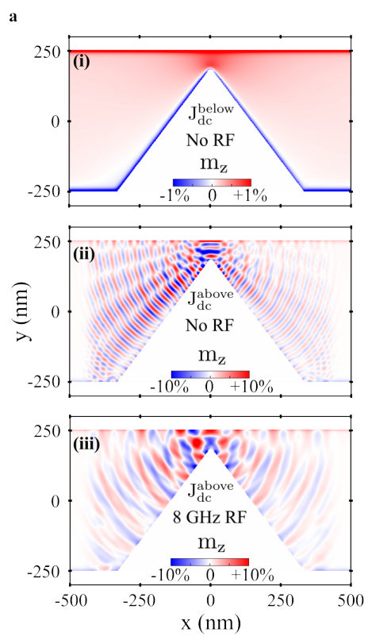
<figcaption class="paper-figure-caption"><b>Fig 2.</b> FIG. 2.</figcaption>
</figure>
<figure class="paper-figure-card">

<figcaption class="paper-figure-caption"><b>Fig 3.</b> FIG. 3.</figcaption>
</figure>
<figure class="paper-figure-card">

<figcaption class="paper-figure-caption"><b>Fig 4.</b> FIG. 4.</figcaption>
</figure>
</div>

<p><strong>Summary.</strong> This work investigates how spin-orbit torques drive oscillatory behavior in synthetic antiferromagnets using nanoconstrictions. By measuring the spin-rectification voltage and comparing results with simulations, the authors demonstrate electrical excitation of both linear eigenmodes and complex, current-driven self-oscillations near magnetic phase transitions. This establishes SAFs as a promising platform for nonlinear spintronic devices.</p>
<p><strong>Why it may be interesting.</strong> While focused on magnetism/spintronics, the study models non-equilibrium, driven, and dissipative collective excitations (oscillators) whose dynamics are controlled by external currents, providing an experimental platform for studying nonlinear wave phenomena relevant to open quantum systems.</p>
<details>
<summary>Detailed structure</summary>
<p><strong>Main problem.</strong> The study demonstrates electrical excitation of spin-orbit torque (SOT)-driven antiferromagnetic oscillator dynamics using a synthetic antiferromagnet (SAF) nanoconstriction.</p>
<p><strong>Main result.</strong> The research establishes SAF nanoconstrictions as an accessible platform for observing complex, current-driven nonlinear dynamics, including self-oscillations and injection locking near the spin-flop transition.</p>
<p><strong>Method.</strong> Measurements involve spin-rectification spectroscopy (V_SRE) while applying RF currents and sweeping magnetic fields; theoretical understanding is supplemented by micromagnetic and macrospin simulations.</p>
<p><strong>Model / system.</strong> The physical system is a SAF multilayer stack patterned into a nanoconstriction, which exhibits distinct acoustic and optical magnetization eigenmodes. The dynamics are governed by spin-orbit torques (SOT) acting on the coupled magnetic layers.</p>
<p><strong>Key observables.</strong> Spin-rectification voltage ($V_{SRE}$), resonance frequencies of acoustic/optical modes, threshold DC current for self-oscillation, and Power Spectral Density (PSD) signatures showing injection locking.</p>
<p><strong>Important parameters / regimes.</strong> The analysis focuses on the spin-flop transition regime, critical DC currents ($J_{above}^{dc}$), and the interplay between RF excitation and bias currents.</p>
<p><strong>Assumptions / limitations.</strong> The interpretation of SOT mechanisms relies on combined evidence from mode selectivity and symmetry arguments; simulations may neglect certain damping terms for simplicity.</p>
<p><strong>Figures summary.</strong> Figures illustrate the SAF structure, selective excitation of acoustic/optical modes based on applied angle ($\Phi$), resonance frequency mapping vs. field, and PSD analysis showing transitions from linear resonance to self-oscillations under increasing DC current.</p>
<p><strong>Paper structure.</strong> The paper progresses by first characterizing the linear eigenmodes using SRE spectroscopy across different magnetic field angles; it then investigates nonlinear dynamics by observing threshold behavior for self-oscillations as a function of bias current, culminating in discussions on injection locking and complex chiral dynamics.</p>
</details>
<details>
<summary>Abstract</summary>
<p>Antiferromagnets offer a promising route toward robust spintronic devices because of their compensated magnetic order and exchange-enhanced spin dynamics. Here, we demonstrate a spin-orbit torque (SOT)-driven antiferromagnetic oscillator based on a nanoconstriction patterned from a synthetic antiferromagnet (SAF). Spin-rectification spectroscopy reveals electrical excitation of both acoustic and optical SAF eigenmodes, whose field and frequency dependences are quantitatively described by an antiferromagnetic resonance model. In addition to these linear eigenmodes, we observe low-field spin-rectification peaks that emerge only above a threshold DC current near the spin-flop transition. Their current-polarity-dependent sign and locking to an injected RF frequency provide electrical spin-rectification signatures consistent with current-selected chiral self-oscillatory dynamics. Micromagnetic simulations reproduce the threshold excitation of SOT-driven self-oscillations and injection locking, while macrospin simulations predict stable and chaotic nonlinear dynamics within the same spin-flop region. We interpret the multi-peak, weakly RF-frequency-dependent responses as a qualitative signature of complex nonlinear dynamics. These results establish SAF nanoconstrictions as an experimentally accessible platform for studying current-driven antiferromagnetic-like oscillator dynamics and motivate future work on nonlinear spintronic devices for signal processing and reservoir-computing concepts.</p>
</details>
<p><sub><a href="#top">↑ back to top</a></sub></p>

<p><a id="paper-2607.03965"></a></p>
<h3 id="katsura-nagaosa-balatsky-magnetoelectricity-in-molecular-magnets-bipartite-entanglement-transfer-by-means-of-rotating-electric-field"><a href="http://arxiv.org/abs/2607.03965v1">Katsura-Nagaosa-Balatsky magnetoelectricity in molecular magnets: Bipartite entanglement transfer by means of rotating electric field</a></h3>
<p><strong>Authors:</strong> Zhirayr Adamyan, Ani Chobanyan, Vadim Ohanyan, Azadeh Ghannadan, Jozef Strecka, Saeed Haddadi, Hamid Arian Zad<br>
<strong>Type:</strong> theory · <strong>Category:</strong> other · <strong>PDF:</strong> <a href="https://arxiv.org/pdf/2607.03965v1">https://arxiv.org/pdf/2607.03965v1</a><br>
<strong>Analysis basis:</strong> full PDF text, analyzed in chunks
<strong>Topic relevance:</strong> 🔥 <code>entanglement &amp; information structure</code> <strong>4/5</strong> · <code>analog quantum simulation</code> <strong>3/5</strong> · <code>exotic spin models in light-matter</code> <strong>3/5</strong> · <code>spintronics-quantum-optics interface</code> <strong>3/5</strong> · <code>non-equilibrium dynamics</code> <strong>2/5</strong> · <code>Keldysh / 2PI / non-Gaussian methods</code> <strong>1/5</strong> · <code>correlated / nonlocal dissipation</code> <strong>1/5</strong> · <code>driven-dissipative phase transition</code> <strong>1/5</strong> · <code>methods for driven-dissipative</code> <strong>1/5</strong></p>
<div class="figure-strip-hint">↔ Scroll figures horizontally</div>
<div class="paper-figures-scroll">
<figure class="paper-figure-card">

<figcaption class="paper-figure-caption"><b>Fig 1.</b> FIG. 1. Schematic illustration of the three-spin molecu- lar cluster with an isosceles triangular geometry. The lo- calized S = 1/2 spins interact via two antiferromagnetic exchange couplings, J1 and J2, and are subjected to an external electric field E lying in the plane of the trian- gle. The geometry of the molecule is characterized by the bond angle θ, while the electric-field orientation is speci- fied by the angle ϕ. Within the KNB mechanism, the spin–electric-field coupling is mediated through bond- dependent DM interactions, whose magnitude and direc- tion are determined by both the molecular geometry and the electric-field orientation. Consequently, the parame- ters θ and ϕ provide...</figcaption>
</figure>
<figure class="paper-figure-card">
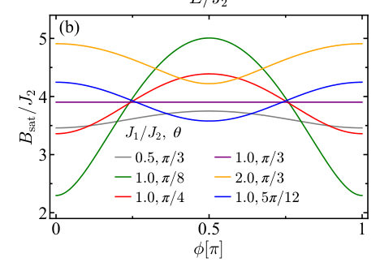
<figcaption class="paper-figure-caption"><b>Fig 2.</b> FIG. 2. Dependence of the saturation magnetic field Bsat on the parameters of the in-plane electric field for the case of uniform KNB coupling (α = 1). (a) Satu- ration field as a function of the electric-field magnitude E/J2 for a fixed field orientation, ϕ = π/4. The curves are shown for several values of the exchange-coupling ratio J1/J2 and bond angle θ, illustrating how the elec- tric field modifies the critical magnetic field required to fully polarize the spin trimer. (b) Angular dependence of the saturation field for a rotating electric field of fixed magnitude, E/J2 = 5, for the same sets of model pa- rameters. The anisotropic variation of Bsat with the electric-field direction...</figcaption>
</figure>
<figure class="paper-figure-card">
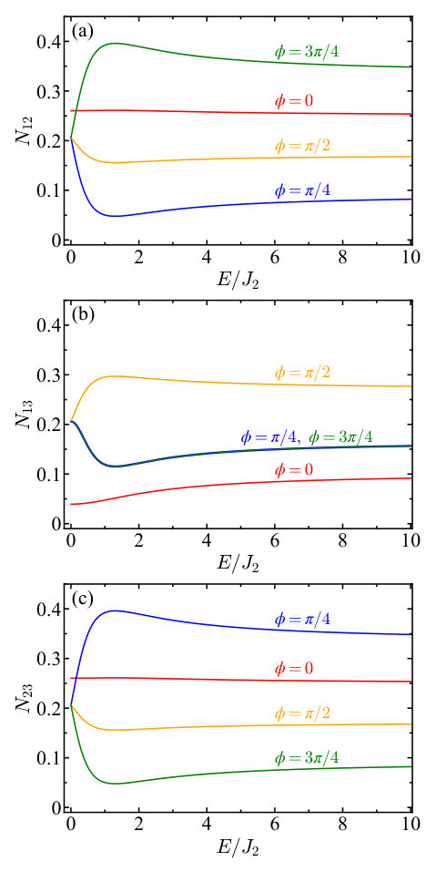
<figcaption class="paper-figure-caption"><b>Fig 3.</b> FIG. 3. Bipartite negativity dependence on the magni- tude of electric field, E, with J1 = J2 = 1, α = 1 and θ = π/4 for four different values of the electric field an- gle, ϕ = 0, π/4, π/2 and 3π/4.</figcaption>
</figure>
<figure class="paper-figure-card">
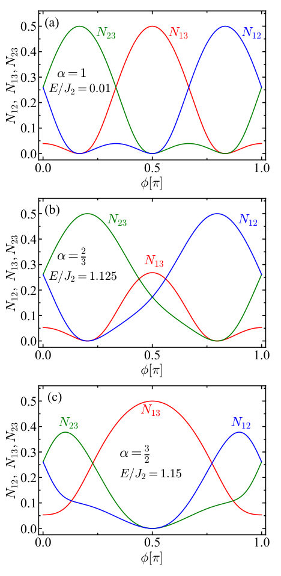
<figcaption class="paper-figure-caption"><b>Fig 4.</b> FIG. 4. Bipartite negativity dependence on the direction of electric field, ϕ, with J1 = J2 = 1 and θ = π/3. Three panels present Nij for different values of α and electric field magnitude. Panel (a): α = 1, E/J2 = 0.01; panel (b): α = 2/3, E/J2 = 1.125; and panel (c): α = 3/2, E/J2 = 1.15. The blue, red and green lines correspond to N12, N13 and N23 respectively.</figcaption>
</figure>
<figure class="paper-figure-card">

<figcaption class="paper-figure-caption"><b>Fig 5.</b> FIG. 5. Tripartite negativity dependence on the direc- tion of electric field ϕ for the three particular cases, which correspond to the parameter sets used in Fig. 4(a): red curve; 4(b): blue curve; and 4(c): orange curve.</figcaption>
</figure>
</div>

<p><strong>Summary.</strong> The paper explores the use of the KNB magnetoelectric effect in a spin trimer model to manipulate quantum entanglement. By applying a rotating electric field, the authors demonstrate an efficient and controllable transfer of bipartite entanglement between different pairs of spins. This establishes molecular nanomagnets as promising platforms for electrically steering quantum information at the nanoscale.</p>
<p><strong>Why it may be interesting.</strong> This work directly addresses electrical control over quantum correlations (entanglement) in solid-state molecular systems, which is highly relevant to developing quantum memory or logic elements based on magnetic materials.</p>
<details>
<summary>Detailed structure</summary>
<p><strong>Main problem.</strong> The study investigates how quantum entanglement can be controlled and transferred between different spin pairs within a molecular magnet using the Katsura-Nagaosa-Balatsky (KNB) magnetoelectric coupling mechanism.</p>
<p><strong>Main result.</strong> A rotating in-plane electric field induces an almost ideal, controllable transfer of bipartite entanglement from one spin pair to another, demonstrating electrical steering of quantum correlations at the molecular scale.</p>
<p><strong>Method.</strong> Theoretical analysis involving calculating bipartite and tripartite entanglement measures (negativity) for a spin-1/2 Heisenberg trimer Hamiltonian subjected to external magnetic and electric fields.</p>
<p><strong>Model / system.</strong> The system is modeled as a spin-1/2 Heisenberg trimer with three coupled spins ($S_1, S_2, S_3$). The physics incorporates the KNB mechanism via an effective Dzyaloshinskii-Moriya (DM) interaction term dependent on external electric fields.</p>
<p><strong>Key observables.</strong> Bipartite and tripartite entanglement quantified using Negativity ($   ext{N}<em ABC>{ij}$ and $  ext{N}</em>$).</p>
<p><strong>Important parameters / regimes.</strong> Electric field magnitude ($E$), orientation ($\phi$), bond angle ($  heta$), and exchange coupling ratios ($J_1/J_2$).</p>
<p><strong>Assumptions / limitations.</strong> The model assumes a spin-1/2 Heisenberg Hamiltonian framework, and the analysis focuses on zero-temperature behavior.</p>
<p><strong>Figures summary.</strong> Figures illustrate how bipartite negativity varies with electric field orientation ($\phi$) and density plots map entanglement across parameter spaces defined by $E$ and coupling nonuniformity ($\alpha$).</p>
<p><strong>Paper structure.</strong> The paper establishes the Hamiltonian incorporating KNB coupling, analyzes entanglement measures for various field configurations ($B=0, E=0$), and culminates in demonstrating the controlled transfer of bipartite entanglement using a rotating electric field.</p>
</details>
<details>
<summary>Abstract</summary>
<p>We investigate quantum entanglement in a spin-1/2 Heisenberg trimer with spin-induced electric polarization described by the Katsura-Nagaosa-Balatsky (KNB) mechanism in the presence of external magnetic and electric fields. The electric field is assumed to lie in the plane of the magnetic ions, allowing its strength and orientation to be tuned independently. We analyze both bipartite and tripartite entanglement and demonstrate that the spin-electric-field coupling provides an efficient mechanism for controlling quantum correlations within the molecular nanomagnet. Depending on the electric-field parameters, the bipartite entanglement can be significantly enhanced or suppressed, while the multipartite entanglement exhibits a rich dependence on the microscopic spin-electric coupling. Most notably, we demonstrate that a rotating in-plane electric field of constant magnitude induces a controllable transfer of bipartite entanglement between different spin pairs. In the symmetric case of homogeneous exchange interactions and uniform KNB coupling, this transfer is found to be nearly ideal, with the bipartite negativity approaching its theoretical maximum for one spin pair while simultaneously vanishing for the remaining pairs. We show that the efficiency of the transfer can be tailored through the exchange interactions, bond geometry, and nonuniform spin-electric coupling. These results establish molecular nanomagnets with KNB spin-electric coupling as a promising platform for the electrical manipulation, steering, and localization of quantum entanglement at the molecular scale.</p>
</details>
<p><sub><a href="#top">↑ back to top</a></sub></p>

<p><a id="paper-2607.03717"></a></p>
<h3 id="nonlinear-hall-effect-in-floquet-driven-monolayer-1tmath1358math-mosmath1359math"><a href="http://arxiv.org/abs/2607.03717v1">Nonlinear Hall effect in Floquet-driven monolayer 1T$'$-MoS$_2$</a></h3>
<p><strong>Authors:</strong> Muhammad Faisal, Muzamil Shah, Imtiaz Khan, Reza Asgari<br>
<strong>Type:</strong> theory · <strong>Category:</strong> other · <strong>PDF:</strong> <a href="https://arxiv.org/pdf/2607.03717v1">https://arxiv.org/pdf/2607.03717v1</a><br>
<strong>Analysis basis:</strong> full PDF text, analyzed in chunks
<strong>Topic relevance:</strong> 🔥 <code>non-equilibrium dynamics</code> <strong>4/5</strong> · <code>Keldysh / 2PI / non-Gaussian methods</code> <strong>3/5</strong> · <code>methods for driven-dissipative</code> <strong>3/5</strong> · <code>spintronics-quantum-optics interface</code> <strong>3/5</strong> · <code>driven-dissipative phase transition</code> <strong>2/5</strong> · <code>analog quantum simulation</code> <strong>1/5</strong> · <code>correlated cavity matter</code> <strong>1/5</strong> · <code>exotic spin models in light-matter</code> <strong>1/5</strong> · <code>non-equilibrium universality</code> <strong>1/5</strong></p>
<div class="figure-strip-hint">↔ Scroll figures horizontally</div>
<div class="paper-figures-scroll">
<figure class="paper-figure-card">
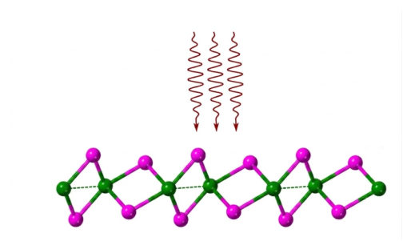
<figcaption class="paper-figure-caption"><b>Fig 1.</b> FIG. 1. Side-view schematic of monolayer 1T ′-MoS2, showing Mo atoms (green) and S atoms (magenta), illuminated by off- resonant circularly polarized light. The intrinsic tilt structure induces asymmetry of the electronic bands.</figcaption>
</figure>
<figure class="paper-figure-card">

<figcaption class="paper-figure-caption"><b>Fig 2.</b> FIG. 2. Floquet quasienergy bands ε±(kx=0, ky) of monolayer 1T′-MoS2 for the four spin–valley sectors at three drive strengths: (a) quantum spin Hall (QSH) (with Ctot = 0) at ξ = 0.01, (b) spin-polarized quantum Hall insulator (S-QHI) (with Ctot = −1) at ξ = 0.04, and (c) photoinduced quantum Hall insulator (P-QHI) (with Ctot = −2) at ξ = 0.10. Green and blue are the κ=+ spin-up and spin-down; red and black are κ=−branches. The electric field and helicity are fixed at α = 0.5 and η = +1.</figcaption>
</figure>
<figure class="paper-figure-card">

<figcaption class="paper-figure-caption"><b>Fig 3.</b> FIG. 3. Total occupied-band Berry curvature Ωtot −= P</figcaption>
</figure>
<figure class="paper-figure-card">

<figcaption class="paper-figure-caption"><b>Fig 4.</b> FIG. 4. Sector-resolved occupied-band Berry curvature Ωz −. Each row is one valley (top) κ+, (bottom) κ−and each column one drive strength (a,d) QSH (ξ = 0.01), (b,e) S-QHI (ξ = 0.04), (c,f) P-QHI (ξ = 0.10). Filled color shows s↑; black contours overlay s↓(solid: positive, dashed: negative), each normalized to its own peak. Other parameters are as in Fig. (2).</figcaption>
</figure>
<figure class="paper-figure-card">
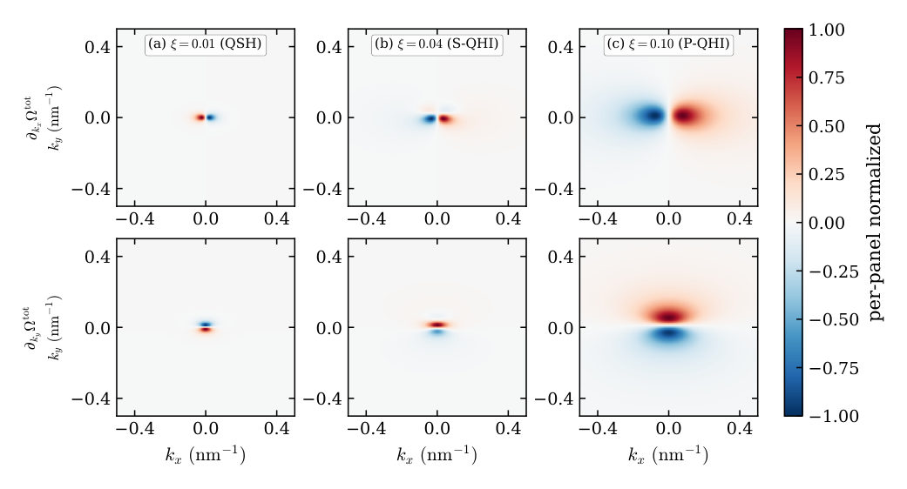
<figcaption class="paper-figure-caption"><b>Fig 5.</b> FIG. 5. Berry-curvature-dipole density of monolayer 1T ′-MoS2 summed over sectors: (top) ∂kxΩtot and (bottom) ∂kyΩtot, for (a) ξ = 0.01, (b) ξ = 0.04, and (c) ξ = 0.10, each panel normalized to its own peak. ∂kxΩis odd in kx and integrates to zero (Dx = 0), while ∂kyΩintegrates to a finite Dy. Other parameters are as in Fig. (2).</figcaption>
</figure>
</div>

<p><strong>Summary.</strong> The paper investigates the nonlinear Hall effect in monolayer 1T'-MoS2 driven by light, establishing that the sign reversal of this response acts as a unique fingerprint for Floquet-induced topological phase transitions. By analyzing the Berry-curvature dipole moment, the authors show that these sign flips are robust signatures distinguishing true topology changes from simple parameter variations.</p>
<p><strong>Why it may be interesting.</strong> This work provides a concrete example of using non-equilibrium quantum optics (Floquet engineering) to probe fundamental topological properties via measurable transport signatures, which is highly relevant for AMO physics and open quantum systems research.</p>
<details>
<summary>Detailed structure</summary>
<p><strong>Main problem.</strong> The study aims to establish a universal transport fingerprint for Floquet-engineered topological phases by investigating the nonlinear Hall effect in driven monolayer 1T'-MoS2.</p>
<p><strong>Main result.</strong> A sign reversal in the nonlinear Hall conductivity, directly linked to sequential band inversions at gap closing points, serves as an unambiguous signature of genuine Floquet topological phase transitions.</p>
<p><strong>Method.</strong> The analysis uses a combination of Floquet effective Hamiltonian theory and nonlinear semiclassical transport theory applied to the system's Berry-curvature dipole moment.</p>
<p><strong>Model / system.</strong> The physical platform is monolayer 1T'-MoS2, modeled as a low-symmetry quantum spin Hall material with intrinsic band tilt. The system is driven by off-resonant circularly polarized light (Floquet driving).</p>
<p><strong>Key observables.</strong> Nonlinear Hall conductivity ($\chi_{xyy}$), Berry-curvature dipole moment ($\mathbf{D}$), and topological invariants like Chern numbers ($C_{tot}$).</p>
<p><strong>Important parameters / regimes.</strong> Driving strength ($\xi$), perpendicular electric field ($E_z$), Fermi energy ($E_F$), and temperature ($T$).</p>
<p><strong>Assumptions / limitations.</strong> The analysis relies on the off-resonant high-frequency (van Vleck) expansion to derive an effective static Floquet Hamiltonian.</p>
<p><strong>Figures summary.</strong> Figures illustrate quasienergy bands, total occupied-band Berry curvature ($\Omega_{tot}^{-}$), and show how the dipole moment ($    ext{Dy}$) changes sign in response to electric fields or driving strength across different topological phases (QSH, S-QHI, P-QHI).</p>
<p><strong>Paper structure.</strong> The paper develops the theoretical framework by deriving the Floquet Hamiltonian, calculating topological invariants like the Berry curvature and dipole moment, and then demonstrating that the sign change of the nonlinear Hall response precisely tracks the sequence of band inversions associated with topological phase transitions.</p>
</details>
<details>
<summary>Abstract</summary>
<p>We study the nonlinear Hall effect in Floquet-driven monolayer \(1T'\)-MoS\(_2\), a low-symmetry quantum spin Hall material whose tilted Dirac bands sustain an intrinsic Berry-curvature dipole without the need for strain or trigonal warping. We show that off-resonant circularly polarized light offers a way to control both the sign and the magnitude of the nonlinear Hall response through optically induced topological phase transitions using a Floquet effective Hamiltonian and nonlinear semiclassical transport theory. We show that the anisotropic crystal symmetry enforces a selection rule in which the Berry-curvature dipole elements satisfy $D_x\equiv0$, while a finite $D_y$ originates from the intrinsic band tilt. The Berry curvature is recreated in momentum space as the Floquet drive successively inverts individual spin-valley sectors, resulting in an identical sign reversal of the nonlinear Hall conductivity and the Berry-curvature dipole at each bulk gap closing. In contrast, tuning the band tilt modifies only the magnitude of the response without changing its sign, establishing the observed sign reversal as an unambiguous transport signature of genuine Floquet topological phase transitions. We further show that the nonlinear Hall response can be controlled by the driving strength, perpendicular electric field, Fermi energy, and temperature, providing multiple experimental knobs for observation. Our findings establish the sign of the nonlinear Hall response as a universal transport fingerprint of Floquet-engineered topology and point to monolayer \(1T'\)-MoS\(_2\) as a viable platform for all-electrical detection of nonequilibrium topological phases.</p>
</details>
<p><sub><a href="#top">↑ back to top</a></sub></p>

<p><a id="paper-2607.04724"></a></p>
<h3 id="tunable-nonlinear-landscapes-in-graphene-nanoelectromechanical-systems"><a href="http://arxiv.org/abs/2607.04724v1">Tunable Nonlinear Landscapes in Graphene Nanoelectromechanical Systems</a></h3>
<p><strong>Authors:</strong> Ateesh K. Rathi, Rajan Singh, Javed A. Mondal, Arnab Sarkar, Ryan J. T. Nicholl, Kirill I. Bolotin, Saikat Ghosh<br>
<strong>Type:</strong> both · <strong>Category:</strong> other · <strong>PDF:</strong> <a href="https://arxiv.org/pdf/2607.04724v1">https://arxiv.org/pdf/2607.04724v1</a><br>
<strong>Analysis basis:</strong> full PDF text, analyzed in chunks
<strong>Topic relevance:</strong> <code>analog quantum simulation</code> <strong>3/5</strong> · <code>driven-dissipative phase transition</code> <strong>3/5</strong> · <code>methods for driven-dissipative</code> <strong>3/5</strong> · <code>Frenkel-Kontorova</code> <strong>2/5</strong> · <code>non-equilibrium dynamics</code> <strong>2/5</strong> · <code>Keldysh / 2PI / non-Gaussian methods</code> <strong>1/5</strong> · <code>correlated / nonlocal dissipation</code> <strong>1/5</strong> · <code>interference shaping light</code> <strong>1/5</strong> · <code>non-equilibrium universality</code> <strong>1/5</strong></p>
<div class="figure-strip-hint">↔ Scroll figures horizontally</div>
<div class="paper-figures-scroll">
<figure class="paper-figure-card">
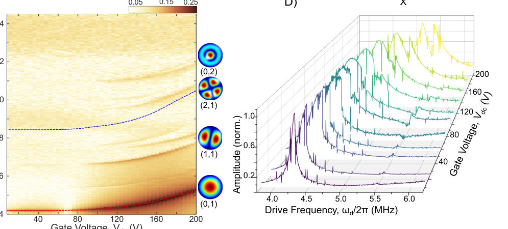
<figcaption class="paper-figure-caption"><b>Fig 1.</b> Figure 1. Device, effective potential, and gate-tunable 1:2 internal resonance. (A)(a) Scanning electron micrograph of the device. (b) Capacitive geometry: an AC voltage Vac drives the membrane and a DC gate voltage Vdc sets the static tension. (B) Effective potential V (X) of the fundamental mode, showing the competing quadratic and cubic nonlinear terms. (C) Dispersion of the mechanical resonances versus Vdc. (D) Amplitude response of the fundamental mode versus Vdc at fixed Vac = 6.0 V.</figcaption>
</figure>
<figure class="paper-figure-card">
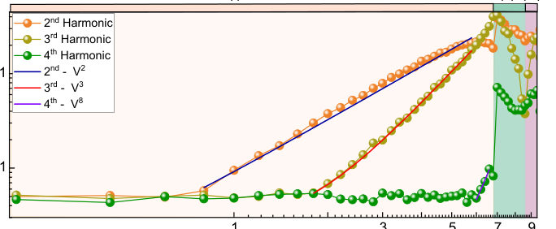
<figcaption class="paper-figure-caption"><b>Fig 2.</b> Figure 2. Integer high-harmonic generation and amplitude scaling. (A) Fundamental-mode spectrum with increasing drive amplitude at Vdc = 172 V; the spectral dip deepens as the nonlinear mode coupling strengthens. (B) Spectrum at fixed drive amplitude, showing the mode splitting from internal resonance. The black vertical line marks the drive frequency used in the following measurements. (C) Broadband spectrum under single-tone drive, showing integer harmonics up to fourth order (nωd, n = 1–4). Inset: onset threshold of each harmonic versus drive amplitude. (D) Amplitudes of the second, third, and fourth harmonics versus drive voltage, showing three regimes: (i) integer-harmonic generation...</figcaption>
</figure>
<figure class="paper-figure-card">

<figcaption class="paper-figure-caption"><b>Fig 3.</b> Figure 3. From integer harmonics through frequency combs to chaos. (A) Spectral map versus drive amplitude at fixed ωd/2π = 4.8338 MHz and Vdc = 158 V. Three regimes are marked: (i) integer-harmonic generation (Vac ≤6.8 V); (ii) dense comb (6.8 ≤Vac ≤8.8 V); (iii) reverse period-doubled comb with doubled spacing (8.8 ≤Vac ≤9.4 V). (B) Spectral map versus drive frequency at fixed drive amplitude, showing the evolution from a single peak to a comb, then successive period-doubling steps (∆c →∆c/2 →∆c/4) and finally chaos. Inset: fundamental-mode spectrum with the 1:2 mode splitting; the shaded band marks the swept frequency range.</figcaption>
</figure>
</div>

<p><strong>Summary.</strong> The authors report on controlling the highly nonlinear dynamics of graphene nanomechanical resonators using an applied gate voltage. By tuning the potential landscape, they demonstrate that a single device can act sequentially as a frequency multiplier, a broadband comb source, or exhibit controlled period-doubling transitions. This highlights the utility of solid-state systems for realizing complex non-linear wave phenomena on demand.</p>
<p><strong>Why it may be interesting.</strong> This work showcases a solid-state quantum/classical analog system where external electrical tuning (gate voltage) controls the nonlinear coupling terms ($\zeta$), enabling deterministic switching between different complex dynamical states relevant to non-linear optics and energy harvesting.</p>
<details>
<summary>Detailed structure</summary>
<p><strong>Main problem.</strong> The study demonstrates how a single, gated graphene nanomechanical resonator can exhibit tunable nonlinear dynamics, allowing it to function as multiple distinct physical sources.</p>
<p><strong>Main result.</strong> The device successfully transitions through regimes of integer harmonic generation (IHG), dense frequency comb formation, and controlled reverse period-doubling cascades by tuning the gate voltage or drive amplitude.</p>
<p><strong>Method.</strong> The research combines experimental measurements using optical interferometry with theoretical modeling employing nonlinear oscillator equations and harmonic balance techniques.</p>
<p><strong>Model / system.</strong> The system is a suspended monolayer graphene drumhead whose effective potential $V(X)$ can be tuned by an applied gate voltage ($V_{dc}$) to include quadratic ($\zeta X^3$) and cubic ($eta X^4$) nonlinear terms. The dynamics are analyzed near a 1:2 internal resonance.</p>
<p><strong>Key observables.</strong> Integer harmonics ($n\omega_d$), dense frequency comb spacing ($\Delta c$), period-doubling cascade structure, and the measured nonlinear coefficients $\zeta$ and $eta$.</p>
<p><strong>Important parameters / regimes.</strong> Gate voltage ($V_{dc}$), drive amplitude ($V_{ac}$), and the internal resonance condition ($\omega_2 \approx 2\omega_0$).</p>
<p><strong>Assumptions / limitations.</strong> Theoretical analyses rely on harmonic balance approximations, assuming sinusoidal responses and retaining only resonant components in the coupled equations of motion.</p>
<p><strong>Figures summary.</strong> Figures illustrate the device structure, the effective potential landscape, resonance dispersion curves vs. $V_{dc}$, and spectral maps detailing the progression from discrete harmonics to combs and back via period-doubling transitions.</p>
<p><strong>Paper structure.</strong> The paper progresses by first establishing the physical platform and tunable nonlinear model; it then presents experimental evidence showing harmonic generation followed by comb formation and period-doubling cascades; finally, theoretical analysis confirms these observed dynamics using coupled oscillator equations under internal resonance conditions.</p>
</details>
<details>
<summary>Abstract</summary>
<p>Nonlinear nanomechanical resonators give convenient solid-state access to classical analogs of extreme nonlinear optics and to phononic signal processing. Here we report integer high-harmonic generation and phononic frequency combs in a suspended monolayer graphene drum. A gate voltage breaks the out-of-plane symmetry of the membrane and tunes its fundamental flexural mode onto a 1:2 internal resonance with a higher mode at twice the frequency, where the quadratic coupling between the two modes becomes large. A single drive tone then generates phase-locked integer harmonics in sequence, and at larger drive these fill in to a dense frequency comb. Raising the drive further, we find a reverse period-doubling transition: the comb spacing doubles, the line density halves, and energy flows back into the even-order comb lines. The measured spectra yield the quadratic ($ζ$) and cubic ($β$) nonlinear coefficients of the membrane. These results show how the tunable nonlinear landscape of graphene supports distinct dynamical regimes on demand, allowing a single gated device to act in turn as a frequency multiplier, a broadband comb source, and a chaotic generator.</p>
</details>
<p><sub><a href="#top">↑ back to top</a></sub></p>

<p><a id="paper-2607.03873"></a></p>
<h3 id="quench-glow-or-stay-silent-distance-controlled-up-conversion-emission-near-metallic-nanowires"><a href="http://arxiv.org/abs/2607.03873v1">Quench, Glow, or Stay Silent: Distance-Controlled Up-Conversion Emission near Metallic Nanowires</a></h3>
<p><strong>Authors:</strong> Maciej Cwierzona, Michal Zebrowski, Pavel Dziarhai, Joanna Niedziolka-Jonsson, Martin Jonsson-Niedziolka, Marcin Nyk, Sebastian Mackowski, Dawid Piatkowski<br>
<strong>Type:</strong> experiment · <strong>Category:</strong> other · <strong>PDF:</strong> <a href="https://arxiv.org/pdf/2607.03873v1">https://arxiv.org/pdf/2607.03873v1</a><br>
<strong>Analysis basis:</strong> full PDF text, analyzed in chunks
<strong>Topic relevance:</strong> <code>non-equilibrium dynamics</code> <strong>3/5</strong> · <code>quantum optics experiment</code> <strong>3/5</strong> · <code>Tavis-Cummings &amp; cavity-many-emitter</code> <strong>2/5</strong> · <code>correlated cavity matter</code> <strong>2/5</strong> · <code>analog quantum simulation</code> <strong>1/5</strong> · <code>correlated / nonlocal dissipation</code> <strong>1/5</strong> · <code>driven-dissipative phase transition</code> <strong>1/5</strong> · <code>interference shaping light</code> <strong>1/5</strong> · <code>methods for driven-dissipative</code> <strong>1/5</strong> · <code>non-equilibrium universality</code> <strong>1/5</strong></p>
<div class="figure-strip-hint">↔ Scroll figures horizontally</div>
<div class="paper-figures-scroll">
<figure class="paper-figure-card">

<figcaption class="paper-figure-caption"><b>Fig 1.</b> Fig. 1. Schematic illustration of controlled spatial geometry of up-conversion NCs and silver NWs. Increasing the thickness of the PVA film in the sequence (a)-(c) provides a means to systematically vary their spatial separation.</figcaption>
</figure>
<figure class="paper-figure-card">
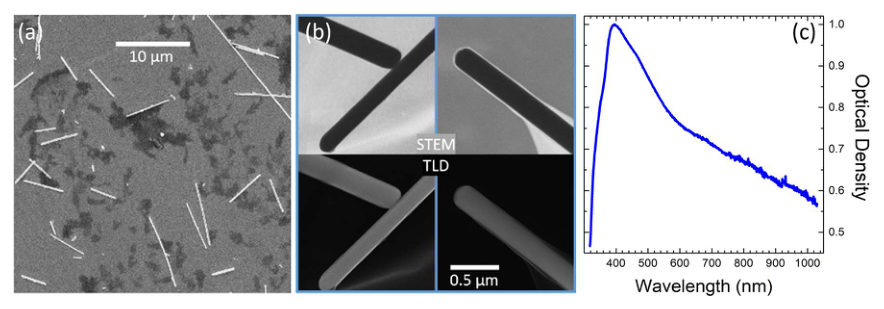
<figcaption class="paper-figure-caption"><b>Fig 2.</b> Fig. 2. (a) SEM image of silver nanowires deposited on a conductive carbon foil. (b) Scanning transmission electron microscopy (STEM) images of nanowires (upper panel) illustrating the surrounding PVP polymer layer, with corresponding images acquired using a through-lens detector (TLD) shown in the lower panel for comparison. (c) Absorbance spectrum of the silver nanowire colloid.</figcaption>
</figure>
<figure class="paper-figure-card">

<figcaption class="paper-figure-caption"><b>Fig 3.</b> Fig. 3. (a) TEM image of the NaYF4:Er3+/Yb3+ NCs together with a histogram illustrating the statistical size distribution. (b) SEM image of individual NCs dispersed on a glass substrate (S00) and the corresponding PL image of the same sample area (c). Only minimal agglomeration is observed, which is easily distinguishable in both SEM and PL images. (d) Emission spectrum of a single NC under 980 nm excitation.</figcaption>
</figure>
<figure class="paper-figure-card">
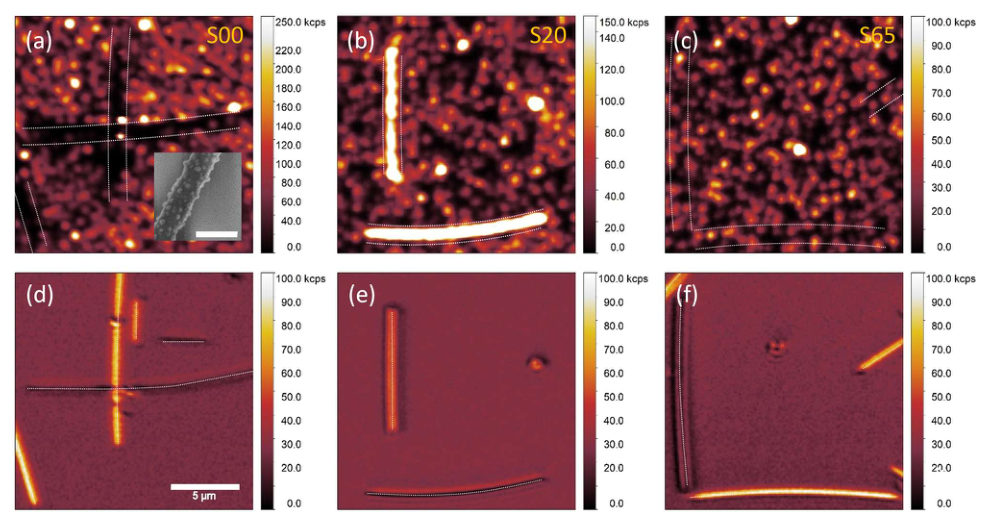
<figcaption class="paper-figure-caption"><b>Fig 4.</b> Fig. 4. Photoluminescence intensity maps of individual up-conversion NCs acquired for samples S00, S20, and S65 (a-c), together with the corresponding maps of elastically back-scattered laser light (d-f), illustrating the spatial distribution of NWs. The white dashed lines indicate the positions of the NWs. The PL maps were obtained by recording the red up- conversion emission of the NCs under 980 nm laser excitation. The inset in panel (a) shows an SEM image of a bare silver nanowire with attached nanocrystals. The scale bar represents 200 nm.</figcaption>
</figure>
<figure class="paper-figure-card">

<figcaption class="paper-figure-caption"><b>Fig 5.</b> Fig. 5. μs-FLIM maps of the up-conversion emission recorded for sample S20, acquired from the same sample region as shown in Fig. 4b,e. Panel (a) shows the green emission, while panel (b) corresponds to the red emission of the NCs. Both maps were obtained under 980 nm laser excitation using a pulsed excitation scheme with a pulse duration of 20 µs. The color scale represents the extracted luminescence lifetime values.</figcaption>
</figure>
</div>

<p><strong>Summary.</strong> The authors developed a highly controlled hybrid nanostructure combining rare-earth up-conversion nanocrystals with metallic nanowires separated by a polymer spacer. By tuning this separation distance, they demonstrated deterministic control over the optical response, observing transitions between luminescence quenching, plasmon-enhanced emission, and near-decoupled behavior.</p>
<p><strong>Why it may be interesting.</strong> This work provides an excellent experimental realization of open quantum system dynamics in nanophotonics, allowing direct measurement of energy relaxation pathways (radiative vs. nonradiative) as a function of engineered coupling strength to plasmonic modes.</p>
<details>
<summary>Detailed structure</summary>
<p><strong>Main problem.</strong> The research aims to achieve precise, reproducible control over the interaction between individual up-conversion emitters and metallic nanostructures to study distance-dependent emission modification.</p>
<p><strong>Main result.</strong> Three distinct optical regimes—quenching, plasmonic enhancement, and effective decoupling—were demonstrated by systematically controlling the separation distance using a polymer spacer layer.</p>
<p><strong>Method.</strong> The study utilized single-nanostructure measurements with time-resolved microsecond fluorescence lifetime imaging microscopy (FLIM) under 980 nm excitation.</p>
<p><strong>Model / system.</strong> The platform consists of $  ext{NaYF}_4:    ext{Er}^{3+}/   ext{Yb}^{3+}$ nanocrystals placed near silver nanowires, separated by a precisely controlled polymer spacer film like PVA. This hybrid architecture allows tuning the emitter-metal coupling.</p>
<p><strong>Key observables.</strong> Emission intensity maps (PL), fluorescence decay times ($\mu	ext{s-FLIM}$), and the separation distance ($d$).</p>
<p><strong>Important parameters / regimes.</strong> Separation distance ($d$), which controls transitions between quenching, enhancement, and decoupling regimes.</p>
<p><strong>Assumptions / limitations.</strong> The use of a well-defined polymer spacer overcomes limitations from inhomogeneous residual layers found in previous studies. The observed enhancement is attributed to modification of the local photonic density of states coupled to plasmon modes.</p>
<p><strong>Figures summary.</strong> Figures illustrate schematics of the geometry controlled by PVA thickness, energy level diagrams for up-conversion, and PL/FLIM maps comparing emission characteristics across different spacer thicknesses (S00, S20, S65).</p>
<p><strong>Paper structure.</strong> The paper establishes a systematic platform using polymer spacers to control emitter-metal separation. It then presents evidence of three distinct regimes—quenching at short range, enhancement via plasmons at intermediate range, and decoupling at large distances—using intensity mapping and lifetime measurements.</p>
</details>
<details>
<summary>Abstract</summary>
<p>We demonstrate controlled transitions between competing radiative and nonradiative decay channels in the up-conversion luminescence of NaYF4:Er3+/Yb3+ nanocrystals placed in proximity to metallic nanowires. The nanocrystal-nanowire separation is used as a key control parameter governing the optical response. An essential aspect of our approach is the removal of inhomogeneous residual polymer layers from the nanowires, eliminating any compromise on distance control and reproducibility in emitter-metal hybrid nanostructures. Replacing them with a well-defined polymer spacer yields controlled access to three qualitatively distinct interaction regimes: luminescence quenching, plasmonic enhancement, and effective decoupling. Transitions between these regimes are shown to reflect changes in the dominant energy relaxation pathways: from nonradiative losses in direct contact with the metal, through modification of the local photonic density of states and coupling to plasmon-mediated modes, to behavior characteristic of quasi-isolated emitters. The plasmonic origin of the emission enhancement in the intermediate regime is evidenced by an increase in luminescence intensity accompanied by shortened decay times, as revealed by fluorescence lifetime imaging microscopy of up-conversion nanocrystals. All experiments were performed on single nanostructures, thereby excluding artefacts arising from aggregation effects and strengthening the interpretation of the observed phenomena. The presented approach provides controlled access to plasmon-modified decay channels and offers a basis for the rational design of functional nanophotonic and sensing structures with tailored optical properties.</p>
</details>
<p><sub><a href="#top">↑ back to top</a></sub></p>

<p><a id="paper-2607.03544"></a></p>
<h3 id="nonlocal-orbital-angular-momentum-dichroism-of-vortex-light-in-strained-crystals"><a href="http://arxiv.org/abs/2607.03544v1">Nonlocal Orbital-Angular-Momentum Dichroism of Vortex Light in Strained Crystals</a></h3>
<p><strong>Authors:</strong> Habib Rostami<br>
<strong>Type:</strong> theory · <strong>Category:</strong> other · <strong>PDF:</strong> <a href="https://arxiv.org/pdf/2607.03544v1">https://arxiv.org/pdf/2607.03544v1</a><br>
<strong>Analysis basis:</strong> full PDF text, analyzed in chunks
<strong>Topic relevance:</strong> <code>Keldysh / 2PI / non-Gaussian methods</code> <strong>3/5</strong> · <code>interference shaping light</code> <strong>3/5</strong> · <code>driven-dissipative phase transition</code> <strong>2/5</strong> · <code>methods for driven-dissipative</code> <strong>2/5</strong> · <code>analog quantum simulation</code> <strong>1/5</strong> · <code>correlated / nonlocal dissipation</code> <strong>1/5</strong> · <code>correlated cavity matter</code> <strong>1/5</strong> · <code>non-equilibrium dynamics</code> <strong>1/5</strong> · <code>spintronics-quantum-optics interface</code> <strong>1/5</strong></p>
<div class="figure-strip-hint">↔ Scroll figures horizontally</div>
<div class="paper-figures-scroll">
<figure class="paper-figure-card">

<figcaption class="paper-figure-caption"><b>Fig 1.</b> FIG. 1. Schematic of an optical vortex incident on a nonuni- formly strained hexagonal two-dimensional material. The sur- face represents a Gaussian strain bubble, with colour indicat- ing the deformation amplitude. The vortex core is displaced from the bubble center by the in-plane vector d. The circular arrows denote the vortex transverse phase current J (ℓ). This relative displacement breaks the common circular symmetry of the optical and strain profiles, enabling OAM-sensitive cou- pling through optical nonlocality.</figcaption>
</figure>
<figure class="paper-figure-card">

<figcaption class="paper-figure-caption"><b>Fig 2.</b> FIG. 2. OAM-projected geometric overlap integral B(ℓ) ab and SAM-projected material tensor Λ(s) ab for strain-assisted OAM dichroism. (a) Geometric overlap for a displaced Gaussian bubble, shown through B(ℓ) D = B(ℓ) xx −B(ℓ) yy . For dx = dy = d, the symmetric off-diagonal component B(ℓ) S = B(ℓ) xy + B(ℓ) yx is numerically identical to B(ℓ) D . The main panel shows B(1) D ver- sus d/R0 for ℓ= 1 and w0 = R0. Insets show its dependence on w0/R0 at ℓ= 1, dx = dy = 0.1R0, and on ℓat w0 = R0, dx = dy = 0.1R0. We use a Gr¨uneisen parameter β ≈2 and the universal bubble aspect ratio h0/R0 ≈0.1 [48]. We set R0 = 1 µm. (b) Material response near the interband reso- nance ℏω ≈2µ, normalized by Z0 =...</figcaption>
</figure>
</div>

<p><strong>Summary.</strong> This theoretical paper demonstrates how nonuniform strain can induce Orbital-Angular-Momentum (OAM) dichroism in vortex light propagating through 2D Dirac materials. By breaking translational symmetry, the authors bypass a fundamental no-go theorem, showing that the measurable OAMD is governed by a factorable product of an elasto-optic tensor and the geometric overlap of the strain field with the vortex phase current.</p>
<p><strong>Why it may be interesting.</strong> This work provides a concrete mechanism—strain engineering—to generate a measurable optical signature (OAM dichroism) that is fundamentally forbidden in simpler, translationally invariant quantum systems. This bridges topological light properties with solid-state material response.</p>
<details>
<summary>Detailed structure</summary>
<p><strong>Main problem.</strong> The study investigates the generation of Orbital-Angular-Momentum (OAM) dichroism ($\Delta\sigma_{OAM}$) for vortex light propagating through condensed matter systems.</p>
<p><strong>Main result.</strong> OAMD requires broken continuous translational symmetry, which is achieved by applying nonuniform strain in a 2D Dirac material. The resulting OAMD factorizes into an elasto-optic tensor and the geometric overlap of the vortex phase current with the strain field.</p>
<p><strong>Method.</strong> The analysis uses a theoretical framework involving nonlocal optical response functions calculated via Wigner variables, expanding the conductivity kernel in terms of strain-induced pseudo-gauge fields.</p>
<p><strong>Model / system.</strong> The model employs a two-dimensional Dirac material Hamiltonian subjected to weak, nonuniform strain (e.g., a Gaussian bubble). The analysis considers both interband and intraband contributions to the optical response tensor.</p>
<p><strong>Key observables.</strong> OAM dichroism contrast ($\Delta\sigma_{OAM}$), which is proportional to $  ext{Re}\left[ \mathbf{B}^{(\ell)}<em ab>{ab} \Lambda</em>^s(\omega) 
ight]$.</p>
<p><strong>Important parameters / regimes.</strong> Nonuniform strain magnitude, vortex topological charge ($\ell$), and the tilt parameter ($\alpha$) in the Dirac Hamiltonian.</p>
<p><strong>Assumptions / limitations.</strong> The analysis assumes a weak, long-wavelength strain texture and relies on approximations such as expanding kernels to first order in external wave vector Q and assuming specific doping regimes.</p>
<p><strong>Figures summary.</strong> Figures illustrate the geometric overlap tensor $B^{(\ell)}_{ab}$ dependence on displacement and beam waist, and show material coefficients entering the OAM-odd response, highlighting resonant enhancement.</p>
<p><strong>Paper structure.</strong> The paper establishes a no-go theorem for translationally invariant systems, then introduces strain to bypass this. It develops the nonlocal conductivity tensor by expanding in strain, factorizing the result into geometric overlap and an elasto-optic tensor derived from solving the Boltzmann equation for both interband and intraband terms.</p>
</details>
<details>
<summary>Abstract</summary>
<p>Vortex light carries orbital angular momentum (OAM) in its transverse phase, unlike spin, which is encoded in polarization. We show that this phase cannot produce OAM dichroism in any continuously translation-invariant system, even when optical nonlocality and multipole light--matter coupling are included. Nonuniform strain in a two-dimensional Dirac material bypasses this no-go condition by supplying transverse momentum transfer through a long-wavelength pseudo-gauge field, so that the OAM dichroism factorizes into a nonlocal elasto-optic tensor and the overlap of the vortex transverse phase current with the strain field. For a micron-scale Gaussian bubble, the resonant OAM-odd conductivity reaches \(\sim10^{-3}e^2/\hbar\), within reach of differential optical measurements.</p>
</details>
<p><sub><a href="#top">↑ back to top</a></sub></p>

<p><a id="paper-2607.04398"></a></p>
<h3 id="pseudo-superconducting-diode-effect-in-ferroelectric-josephson-junctions"><a href="http://arxiv.org/abs/2607.04398v1">Pseudo-superconducting-diode effect in ferroelectric Josephson junctions</a></h3>
<p><strong>Authors:</strong> Yaozu Tang, Nienke ten Haaf, Artem Bondarenko, Mazhar N. Ali, Yaroslav M. Blanter<br>
<strong>Type:</strong> theory · <strong>Category:</strong> statistical mechanics · <strong>PDF:</strong> <a href="https://arxiv.org/pdf/2607.04398v1">https://arxiv.org/pdf/2607.04398v1</a><br>
<strong>Analysis basis:</strong> full PDF text, analyzed in chunks
<strong>Topic relevance:</strong> <code>driven-dissipative phase transition</code> <strong>3/5</strong> · <code>methods for driven-dissipative</code> <strong>3/5</strong> · <code>non-equilibrium dynamics</code> <strong>3/5</strong> · <code>non-equilibrium universality</code> <strong>2/5</strong> · <code>Frenkel-Kontorova</code> <strong>1/5</strong> · <code>Keldysh / 2PI / non-Gaussian methods</code> <strong>1/5</strong> · <code>correlated / nonlocal dissipation</code> <strong>1/5</strong></p>
<div class="figure-strip-hint">↔ Scroll figures horizontally</div>
<div class="paper-figures-scroll">
<figure class="paper-figure-card">
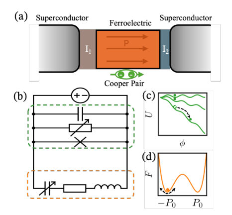
<figcaption class="paper-figure-caption"><b>Fig 1.</b> FIG. 1. Junction and potential landscapes. (a) Schematic of a FE-JJ with broken inversion symmetry due to interfacial insulating layers (I1 and I2). (b) Equivalent cir- cuit: the green box denotes the conventional RCSJ model, while the orange box represents ferroelectric dynamics. (c) Tilted washboard potential of the RCSJ model. (d) Landau double-well potential of the ferroelectric.</figcaption>
</figure>
<figure class="paper-figure-card">

<figcaption class="paper-figure-caption"><b>Fig 2.</b> FIG. 2. Hysteresis in time-averaged voltage and polar- ization. (a), (b) Time-averaged voltage V = V/IcR0 under current sweeps for Landau coefficients A = 2, 4. Blue/red curves are RCSJ results with electric polarization (P-RCSJ), while gray curves are conventional RCSJ results without fer- roelectrics for comparison. The blue and red curves show RCSJ results with electric polarization (P-RCSJ), while the gray curves show conventional RCSJ results without ferro- electricity for comparison. Insets: zoom-in near retrapping currents. (c), (d) Corresponding time-averaged polarization P = P/P0 under current sweeps. The initial polarization is P(0) = −1.</figcaption>
</figure>
<figure class="paper-figure-card">

<figcaption class="paper-figure-caption"><b>Fig 3.</b> FIG. 3. Rocking double-well and washboard poten- tials. Potential landscapes are constructed using the time- averaged data and correspond, from left to right, to sweep points I, I’, II, and III in Fig. 2(d). Gray regions/curves indi- cate oscillation amplitudes. (a)–(d) Ferroelectric double-well potential profiles (orange curves) and polarization values (or- ange balls). (e)–(h) Corresponding Josephson-junction wash- board potentials (green curves) and phase values (green balls).</figcaption>
</figure>
<figure class="paper-figure-card">
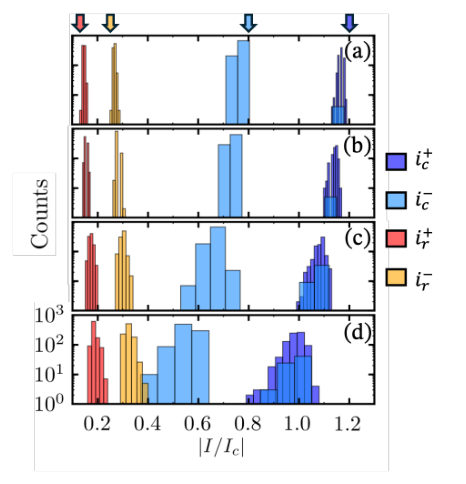
<figcaption class="paper-figure-caption"><b>Fig 4.</b> FIG. 4. Histograms of critical (i± c ) and retrapping (i± r ) currents. The temperature T is set to (a) 0.1 K, (b) 0.2 K, (c) 0.5 K, and (d) 1 K. Each histogram (shown on a log- arithmic scale) is constructed from 1000 full current sweeps. The arrows at the top indicate the zero-temperature values of the critical and retrapping currents for reference. The critical temperature of the superconductor is estimated to be Tc ≃0.5 K using simple BCS approximation.</figcaption>
</figure>
<figure class="paper-figure-card">
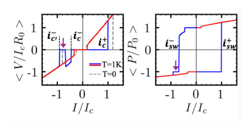
<figcaption class="paper-figure-caption"><b>Fig 5.</b> FIG. 5. Time-averaged characteristics at T = 1 K. Time-averaged (a) voltage and (b) polarization under current sweeps. The purple arrow indicates the additional supercon- ducting region. The sweep protocol and initial conditions are the same as in Fig. 2(a). Dashed gray curves in (a) show the zero-temperature results for comparison.</figcaption>
</figure>
</div>

<p><strong>Summary.</strong> This work proposes that ferroelectric Josephson junctions can exhibit a magnetic-field-free supercurrent diode effect due to the coupling between superconducting currents and ferroelectric polarization switching. By modeling this coupled system using dynamical equations, the authors demonstrate that current sweeps induce history-dependent nonreciprocity in critical and retrapping currents. This identifies FE-JJs as tunable platforms for next-generation nonreciprocal superconducting electronics.</p>
<p><strong>Why it may be interesting.</strong> The coupling between superconducting phase dynamics and classical ferroelectric polarization switching provides a rich platform for studying non-equilibrium phenomena in condensed matter systems, relevant to understanding energy dissipation and memory effects in quantum devices.</p>
<details>
<summary>Detailed structure</summary>
<p><strong>Main problem.</strong> The study investigates a magnetic-field-free pseudo-superconducting-diode effect (SDE) in ferroelectric Josephson junctions, which enables supercurrent rectification.</p>
<p><strong>Main result.</strong> The nonreciprocity is generated by the history-dependent process of current-induced ferroelectric polarization switching, and this effect persists even at finite temperatures.</p>
<p><strong>Method.</strong> The authors employ a coupled dynamical model solving for both the Josephson junction dynamics (RCSJ) and the Landau-Khalatnikov-Tani ferroelectric dynamics using numerical simulations.</p>
<p><strong>Model / system.</strong> The system is an inversion-asymmetric Ferroelectric Josephson Junction (FE-JJ). The physics is modeled by coupling a polarization-dependent RCSJ description to the LKT ferroelectric dynamics, governed by coupled differential equations derived from a Lagrangian approach.</p>
<p><strong>Key observables.</strong> Asymmetric critical and retrapping supercurrents ($i_c$ vs $i_r$), time-averaged voltage ($V$) and polarization ($P$), and diode efficiency ($\eta$).</p>
<p><strong>Important parameters / regimes.</strong> Ferroelectric parameters (e.g., spontaneous polarization $  heta_{P0}$), junction damping, temperature ($T$), and the current sweep protocol.</p>
<p><strong>Assumptions / limitations.</strong> The analysis relies on coupled differential equations derived from a Lagrangian formalism; some discussions neglect voltage-shift terms for simplicity.</p>
<p><strong>Figures summary.</strong> Figures illustrate hysteresis loops (V vs I) showing asymmetry in retrapping currents, time evolution of polarization and phase during switching, and IV scatter plots confirming thermal effects and resistive states at finite T.</p>
<p><strong>Paper structure.</strong> The paper introduces the physical model via coupled dynamics, analyzes the non-equilibrium nature of the SDE using current sweeps (I-V/I-P traces), explores resonance features, and finally examines the robustness and temperature dependence of the diode effect.</p>
</details>
<details>
<summary>Abstract</summary>
<p>The superconducting diode effect (SDE), characterized by unequal critical supercurrents in opposite current directions, enables supercurrent rectification. We propose a magnetic-field-free pseudo-superconducting-diode effect in ferroelectric Josephson junctions with broken inversion symmetry. Using a coupled dynamical model that combines a polarization-dependent RCSJ description with Landau-Khalatnikov-Tani ferroelectric dynamics, we show that ferroelectric polarization switching induces asymmetric critical and retrapping currents under current sweeps. The resulting nonreciprocity is highly tunable via ferroelectric parameters and the sweep protocol and remains robust at finite temperatures. Our work identifies ferroelectric Josephson junctions as a promising platform for magnetic-field-free nonreciprocal superconducting devices.</p>
</details>
<p><sub><a href="#top">↑ back to top</a></sub></p>

<p><a id="paper-2607.04408"></a></p>
<h3 id="theory-of-spinful-relativistic-superfluids"><a href="http://arxiv.org/abs/2607.04408v1">Theory of Spinful Relativistic Superfluids</a></h3>
<p><strong>Authors:</strong> Dam Thanh Son<br>
<strong>Type:</strong> theory · <strong>Category:</strong> other · <strong>PDF:</strong> <a href="https://arxiv.org/pdf/2607.04408v1">https://arxiv.org/pdf/2607.04408v1</a><br>
<strong>Analysis basis:</strong> full PDF text, analyzed in chunks
<strong>Topic relevance:</strong> <code>Keldysh / 2PI / non-Gaussian methods</code> <strong>3/5</strong> · <code>analog quantum simulation</code> <strong>2/5</strong> · <code>spintronics-quantum-optics interface</code> <strong>2/5</strong> · <code>correlated / nonlocal dissipation</code> <strong>1/5</strong> · <code>driven-dissipative phase transition</code> <strong>1/5</strong> · <code>entanglement &amp; information structure</code> <strong>1/5</strong> · <code>exotic spin models in light-matter</code> <strong>1/5</strong> · <code>methods for driven-dissipative</code> <strong>1/5</strong> · <code>non-equilibrium dynamics</code> <strong>1/5</strong> · <code>non-equilibrium universality</code> <strong>1/5</strong></p>
<div class="figure-strip-hint">↔ Scroll figures horizontally</div>
<div class="paper-figures-scroll">
<figure class="paper-figure-card">
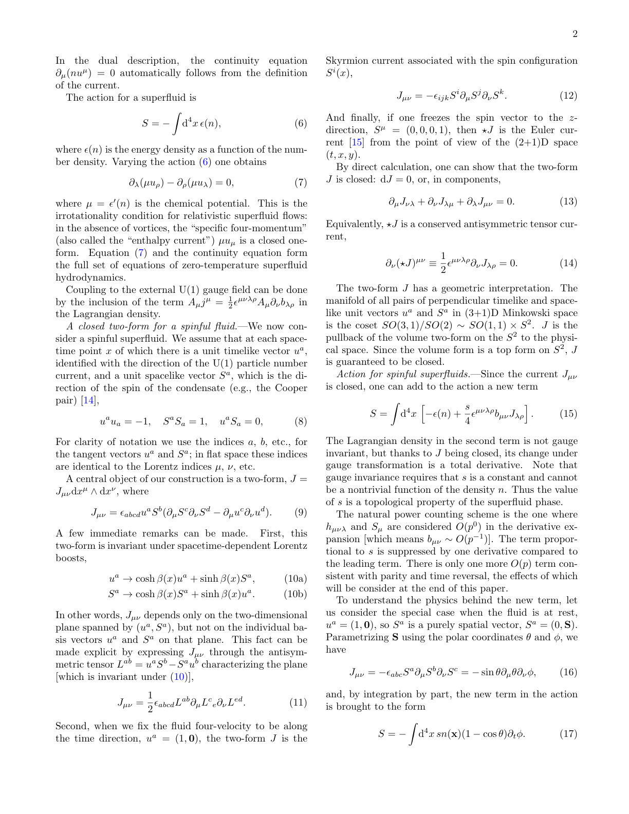
<figcaption class="paper-figure-caption"><b>Fig 1.</b> Low-resolution page preview, page 2</figcaption>
</figure>
<figure class="paper-figure-card">
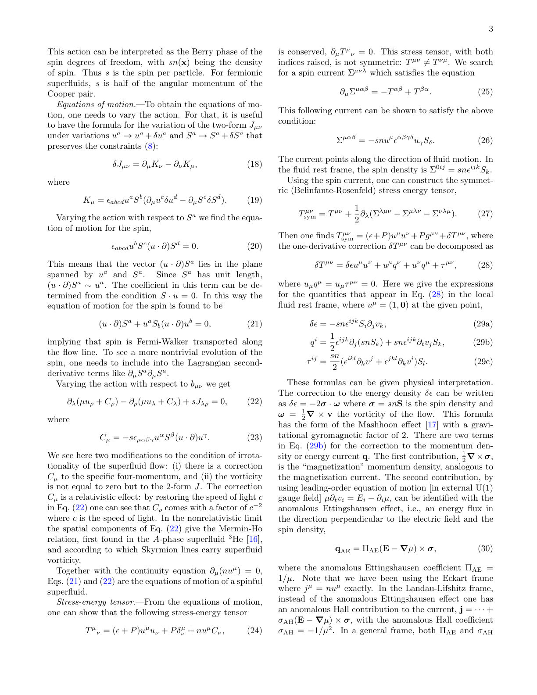
<figcaption class="paper-figure-caption"><b>Fig 2.</b> Low-resolution page preview, page 3</figcaption>
</figure>
<figure class="paper-figure-card">

<figcaption class="paper-figure-caption"><b>Fig 3.</b> Low-resolution page preview, page 4</figcaption>
</figure>
<figure class="paper-figure-card">
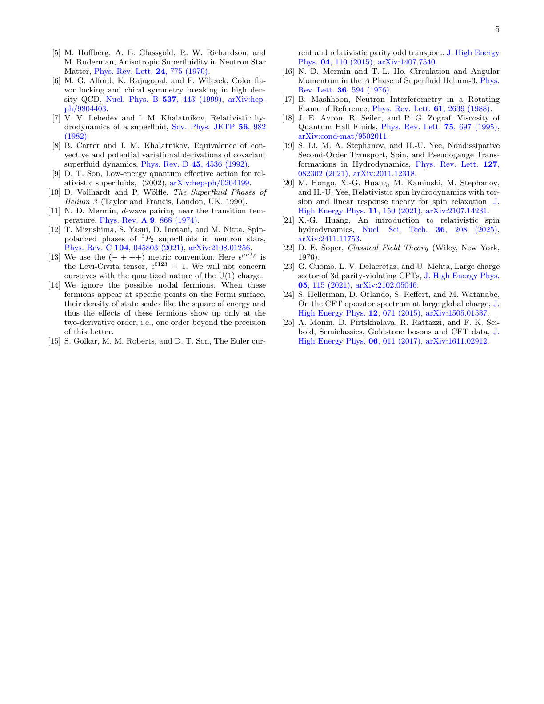
<figcaption class="paper-figure-caption"><b>Fig 4.</b> Low-resolution page preview, page 5</figcaption>
</figure>
</div>

<p><strong>Summary.</strong> This paper develops a comprehensive effective field theory for describing spinful relativistic superfluids. By incorporating a topological term into the action, the authors derive key physical consequences such as anomalous Hall effects and modified superfluid dynamics. It provides a theoretical framework connecting angular momentum density to measurable transport properties.</p>
<p><strong>Why it may be interesting.</strong> While focused on relativistic superfluids, the derivation of anomalous transport coefficients (like Hall viscosity) and the connection between spin dynamics and topological terms mirrors concepts relevant in strongly correlated systems or exotic quantum materials studied in AMO physics.</p>
<details>
<summary>Detailed structure</summary>
<p><strong>Main problem.</strong> The work constructs an effective field theory description for relativistic superfluids that possess a nonzero angular momentum density (spinful). It aims to derive the low-energy physics and observable consequences of such exotic quantum fluids.</p>
<p><strong>Main result.</strong> The theory predicts several novel physical effects, including the relativistic Mermin-Ho relation, anomalous Ettingshausen effect, and anomalous Hall viscosity, stemming from a topological term in the effective action encoding the Berry phase.</p>
<p><strong>Method.</strong> The authors utilize an effective field theory approach involving dual descriptions with two-form gauge fields ($b_{\mu
u}$) to construct the action. They derive equations of motion by varying this extended action.</p>
<p><strong>Model / system.</strong> The system modeled is a spinful relativistic superfluid, extending beyond simple scalar order parameters to include Cooper pairs with nonzero angular momentum (e.g., $p$-wave pairing). The theory incorporates couplings related to the fluid's spin and vorticity.</p>
<p><strong>Key observables.</strong> Stress-energy tensor ($T^{\mu
u}$), anomalous Ettingshausen effect coefficient ($\Pi_{AE}$), anomalous Hall viscosity ($  au_{ij}$), and the Berry phase term in the effective action.</p>
<p><strong>Important parameters / regimes.</strong> The coupling constant $s$ associated with the topological term, and the low-energy derivative expansion order (one-derivative corrections).</p>
<p><strong>Assumptions / limitations.</strong> The analysis is restricted to one-derivative corrections, leaving higher-order terms uninvestigated. It also assumes the existence of such a superfluid state.</p>
<p><strong>Paper structure.</strong> The paper develops the effective action by adding a topological term involving a closed two-form current $J$ to the standard Lagrangian. This leads to modified equations of motion, which are then used to derive conserved quantities like the stress-energy tensor and predict specific transport phenomena.</p>
</details>
<details>
<summary>Abstract</summary>
<p>We construct an effective field theory description of relativistic superfluids with nonzero angular momentum density. At first order in the derivative expansion, the effective action contains a term with a quantized coefficient, which encodes the Berry phase for the angular momentum of the superfluid condensate. From this single term we derive a number of physical effects, including the relativistic Mermin-Ho relation, an anomalous Ettingshausen effect (exchangeable for an anomalous Hall effect), and an anomalous Hall viscosity.</p>
</details>
<p><sub><a href="#top">↑ back to top</a></sub></p>

<p><a id="paper-2607.03698"></a></p>
<h3 id="graph-based-kirchhoff-modeling-of-non-ohmic-electron-transport-in-self-assembled-nanonecklace-networks"><a href="http://arxiv.org/abs/2607.03698v1">Graph-Based Kirchhoff Modeling of Non-Ohmic Electron Transport in Self-Assembled Nanonecklace Networks</a></h3>
<p><strong>Authors:</strong> Obed Issakah, Srivathsan Badrinarayanan, Ravi F. Saraf, Janghoon Ock<br>
<strong>Type:</strong> theory · <strong>Category:</strong> disordered systems and neural networks · <strong>PDF:</strong> <a href="https://arxiv.org/pdf/2607.03698v1">https://arxiv.org/pdf/2607.03698v1</a><br>
<strong>Analysis basis:</strong> full PDF text, analyzed in chunks
<strong>Topic relevance:</strong> <code>methods for driven-dissipative</code> <strong>3/5</strong> · <code>non-equilibrium dynamics</code> <strong>3/5</strong> · <code>driven-dissipative phase transition</code> <strong>2/5</strong> · <code>non-equilibrium universality</code> <strong>2/5</strong> · <code>Frenkel-Kontorova</code> <strong>1/5</strong> · <code>Keldysh / 2PI / non-Gaussian methods</code> <strong>1/5</strong></p>
<div class="figure-strip-hint">↔ Scroll figures horizontally</div>
<div class="paper-figures-scroll">
<figure class="paper-figure-card">
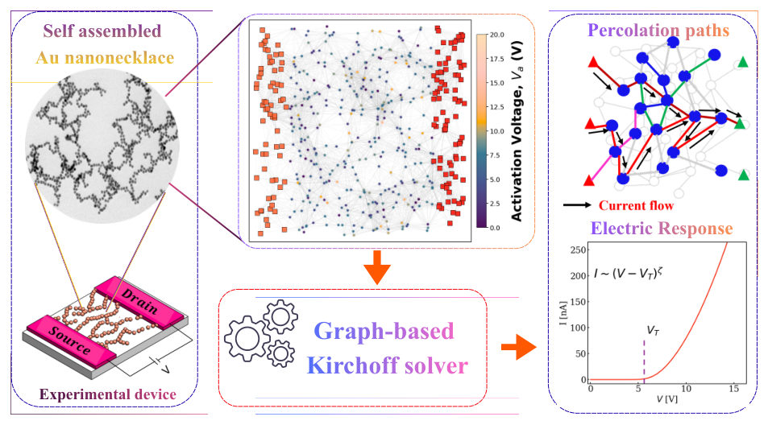
<figcaption class="paper-figure-caption"><b>Fig 1.</b> Figure 1: Overview of the graph-based Kirchhoff modeling framework. A self-assembled gold nanonecklace film deposited between source and drain electrodes (left) is viewed as a synthetic random geometric graph. Each nodes is a junction with an activation voltage Va (centre). At each applied bias, the graph-based Kirchhoff solver computes the current flowing between each pair of connected nodes, yielding the identified source-drain current flowing between each pair of connected nodes pathways and the resulting nonlinear I–V response, fitted to I ∼(V −VT)ζ with threshold voltage VT (right).</figcaption>
</figure>
<figure class="paper-figure-card">

<figcaption class="paper-figure-caption"><b>Fig 2.</b> Figure 2: Step-by-step operation of the graph-based Kirchhoff solver. (1) The synthetic graph, with nodes coloured by activation voltage Va. (2) At a given applied bias, only junctions with Va ≤V remain, forming the conducting subgraph. (3) Each active internal node is split into input and output sub-nodes joined by its node resistance Rnode. (4) The split-node network is assembled into the sparse conductance matrix G. (5) Solving Gφ = b gives the sub-node potentials φ. (6) The edge currents follow from the potential drops across the connecting edges, Iij = (φi −φj)/Redge,ij.</figcaption>
</figure>
<figure class="paper-figure-card">
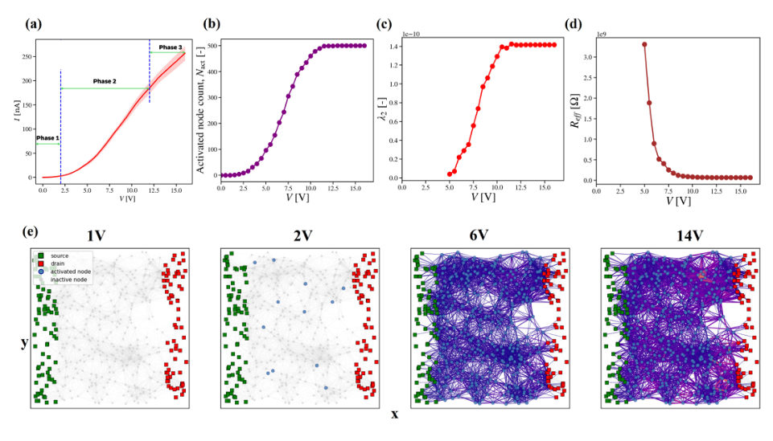
<figcaption class="paper-figure-caption"><b>Fig 3.</b> Figure 3: Macroscopic I–V response and microscopic diagnostics of bias-driven junction activation. (a) Ensemble-averaged I–V response obtained from five independent network realizations at N = 500, ⟨Va⟩= 6 V, σa = 3 V, and fv = 0.00, showing the low-current blockade (Phase 1), the superlinear power-law onset (Phase 2), and the quasi-linear high-bias regime (Phase 3). (b) Activated-node count, (c) algebraic connectivity λ2 of the conducting subgraph, and (d) source-to-drain effective resistance. (e) Spatial snapshots of the conducting network at 1, 2, 6, and 14 V, with source (green) and drain (red) electrodes and activated (filled) versus inactive (faded) nodes.</figcaption>
</figure>
<figure class="paper-figure-card">
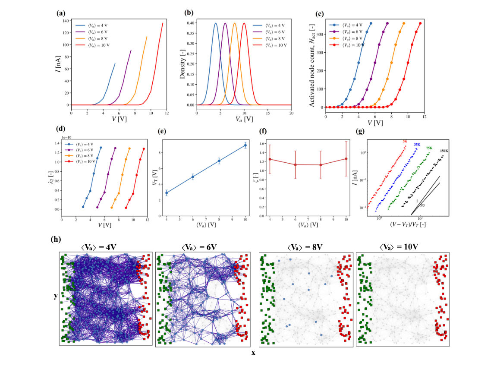
<figcaption class="paper-figure-caption"><b>Fig 4.</b> Figure 4: Mean-activation-voltage dependence of collective transport in nanonecklace net- works. (a) I–V characteristics for ⟨Va⟩= 4, 6, 8, and 10 V at fixed σa = 1 V. (b) Cor- responding activation-voltage distributions. (c) Activated-node population Nact vs. applied voltage. (d) Algebraic connectivity λ2 of the active subnetwork. (e) Threshold voltage VT vs. ⟨Va⟩. (f) Transport exponent ζ from power-law fits. (g) Experimental scaling collapse for self-assembled gold necklace networks, reproduced from Kane et al.13 (h) Active conducting subnetworks at fixed applied voltage for ⟨Va⟩= 4, 6, 8, and 10 V.</figcaption>
</figure>
<figure class="paper-figure-card">
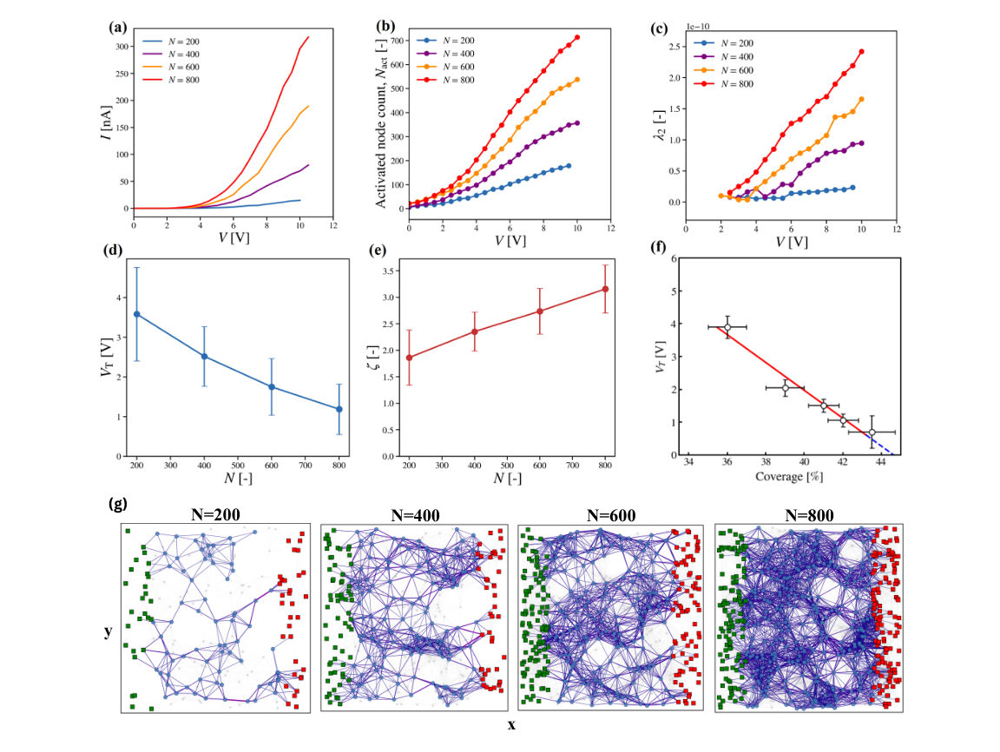
<figcaption class="paper-figure-caption"><b>Fig 5.</b> Figure 5: Network-density dependence of collective transport in nanonecklace networks. (a) I–V characteristics for N = 200, 400, 600, and 800 junctions at fixed ⟨Va⟩= 6 V, σa = 3 V. (b) Activated-node population vs. applied voltage. (c) Algebraic connectivity of the conducting subgraph. (d) Threshold voltage VT vs. N. (e) Transport exponent ζ vs. N. (f) Experimental threshold-voltage–coverage relationship, reproduced from Wilson et al.7</figcaption>
</figure>
</div>

<p><strong>Summary.</strong> This work develops a graph-based Kirchhoff model to simulate electron transport in self-assembled nanonecklace networks exhibiting Coulomb blockade. By treating the network as a dynamic graph, the authors show that the characteristic non-Ohmic I–V response arises from voltage-driven percolation across threshold junctions. The framework allows independent tuning of structural parameters (density, topology) and electronic properties to engineer device behavior.</p>
<p><strong>Why it may be interesting.</strong> While focused on classical circuit physics, the study's reliance on percolation theory in disordered media, threshold effects, and structural control parameters makes it relevant to understanding complex many-body dynamics in mesoscopic systems.</p>
<details>
<summary>Detailed structure</summary>
<p><strong>Main problem.</strong> The core problem is understanding the poorly understood mechanisms governing the macroscopic non-Ohmic current–voltage (I–V) response in self-assembled nanonecklace networks.</p>
<p><strong>Main result.</strong> The model successfully reproduces the power-law I–V behavior, showing that this nonlinearity emerges from the collective, staggered activation of threshold junctions and voltage-driven percolation.</p>
<p><strong>Method.</strong> A novel graph-based Kirchhoff framework is developed to solve circuit laws on a dynamically changing conducting subgraph as bias is applied.</p>
<p><strong>Model / system.</strong> The system models self-assembled gold nanonecklace networks as an undirected geometric graph. Junctions act as nodes with activation voltages, and segments are edges with length-dependent tunneling resistances.</p>
<p><strong>Key observables.</strong> Non-Ohmic I–V response ($I \propto (V - V_T)^\zeta$), active nodes, conducting subgraph structure, nodal potentials, and edge currents.</p>
<p><strong>Important parameters / regimes.</strong> Network density, structural topology (void fraction $f_v$), mean activation voltage ($\langle V_a 
angle$), and the spread of activation voltages ($\sigma_a$).</p>
<p><strong>Assumptions / limitations.</strong> The model uses a simplified linear coupling for node resistance ($R_{n,i} = \alpha V_{a,i}$) and assumes global bias $V$ as the primary activation criterion.</p>
<p><strong>Figures summary.</strong> Figures illustrate the framework overview, step-by-step solver operation (Graph $
ightarrow$ Subgraph $
ightarrow$ Matrix $\mathbf{G}$), and parameter sweeps showing how density, void fraction, and voltage spread control transport exponents ($\zeta$) and threshold voltages ($V_T$).</p>
<p><strong>Paper structure.</strong> The paper introduces the physical problem, details the graph-based Kirchhoff framework (including node/edge resistance models), presents simulation results demonstrating the emergence of non-Ohmic behavior from percolation, and concludes by establishing the model as a design tool for engineering transport.</p>
</details>
<details>
<summary>Abstract</summary>
<p>Gold nanonecklace networks are promising platforms for single-electron switching, chemical sensing, and biogating devices because of their nonlinear current--voltage ($I$--$V$) characteristics arising from collective Coulomb-blockade transport. However, the mechanisms governing this macroscopic behavior remain poorly understood because experimental measurements are generally limited to the network topology and global $I$--$V$ response. To address this, we developed a graph-based Kirchhoff framework that represents a self-assembled nanonecklace network as a graph, with nodes corresponding to junctions between necklace segments and edges to the conducting segments themselves. The solver returns the active nodes, conducting subgraph, nodal potentials, and edge currents at each applied bias, while allowing the activation-voltage statistics, network density, and structural topology to be varied independently. The model reproduces the experimentally observed non-Ohmic response, $I \propto (V-V_T)^ζ$, and shows that this behavior emerges from the collective, staggered activation of threshold junctions and voltage-driven percolation of the conducting subgraph. Independent parameter sweeps reveal that the mean activation voltage shifts the threshold $V_T$ while leaving $ζ$ nearly unchanged, increasing network density raises $ζ$ from approximately 1.9 to 3.1 and enhances current, and topology controls the response even at fixed density and node characteristics. These trends agree qualitatively with experimental observations and establish the model as a design tool for engineering collective transport in self-assembled nanonecklace devices.</p>
</details>
<p><sub><a href="#top">↑ back to top</a></sub></p>

<p><a id="paper-2607.04097"></a></p>
<h3 id="full-gate-voltage-control-of-a-parity-protected-superconducting-qubit-with-an-altermagnetic-josephson-junction"><a href="http://arxiv.org/abs/2607.04097v1">Full Gate-Voltage Control of a Parity-Protected Superconducting Qubit with an Altermagnetic Josephson Junction</a></h3>
<p><strong>Authors:</strong> Guo-Liang Guo<br>
<strong>Type:</strong> theory · <strong>Category:</strong> quantum information and computing · <strong>PDF:</strong> <a href="https://arxiv.org/pdf/2607.04097v1">https://arxiv.org/pdf/2607.04097v1</a><br>
<strong>Analysis basis:</strong> full PDF text, analyzed in chunks
<strong>Topic relevance:</strong> <code>exotic spin models in light-matter</code> <strong>3/5</strong> · <code>spintronics-quantum-optics interface</code> <strong>3/5</strong> · <code>QC/QI experiment</code> <strong>2/5</strong> · <code>Keldysh / 2PI / non-Gaussian methods</code> <strong>1/5</strong> · <code>driven-dissipative phase transition</code> <strong>1/5</strong> · <code>methods for driven-dissipative</code> <strong>1/5</strong></p>
<div class="figure-strip-hint">↔ Scroll figures horizontally</div>
<div class="paper-figures-scroll">
<figure class="paper-figure-card">

<figcaption class="paper-figure-caption"><b>Fig 1.</b> FIG. 1. (a) The setup of AM Josephson junction, AM with superconductors on both ends, ϕ the superconducting phase difference, the red and blue curves are the Fermi surface of AM. (b) The potential shape (blue line) in π periodic, wave- function (light yellow) and energy levels (red lines) of AM Josephson junction at the 0 −π point.</figcaption>
</figure>
<figure class="paper-figure-card">

<figcaption class="paper-figure-caption"><b>Fig 2.</b> FIG. 2. (a) Band structure of the AM with periodic bound- ary conditions along the x direction. µ0 marks zero Cooper- pair center-of-mass momentum. (b) Andreev bound-state spectrum at µ = µ0 (q = 0, red) and away from µ0 (finite q, blue). (c) The minimal point of the Josephson potential changes with µ, insets shows the Josephson potential shape near the 0 −π transition point, corresponding to the vertical lines of the same color in (d). (d) Leading Josephson har- monics versus µ. (e) The energy spectrum E0i, (i = 0, 1, 2, 3) changes with chemical potential near the 0-π transition point. (f) The transition matrix element changes with µ near the 0−π transition point, insets show the lowest...</figcaption>
</figure>
<figure class="paper-figure-card">
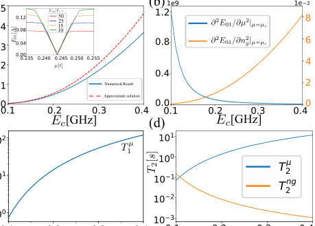
<figcaption class="paper-figure-caption"><b>Fig 3.</b> FIG. 3. (a) At the 0 −π transition point, E01 change along with the variation of Ec, red dashed line is plotted with Eq. (8). Inset shows the E01 changes with the chem- ical potential near the 0 −π transition point with different Ec (b) At the 0 −π transition point, the second derivative ∂2E01/∂µ2, ∂2E01/∂n2 g as a function of Ec. (c) and (d) T1 and T2 vary with Ec.</figcaption>
</figure>
<figure class="paper-figure-card">

<figcaption class="paper-figure-caption"><b>Fig 4.</b> FIG. 4. (a) Qubit transition energy E01 as a function of chemical potential µ and altermagnetic splitting strength M. (b) Waterfall plot of E01 versus µ near the 0-π transition for several values of M. (c) Second derivative of the qubit transition energy with respect to chemical potential, Dµ 2 = ∂2E01/∂µ2|µ=µc, evaluated at the critical chemical potential µc for the 0-π transition, as a function of M.</figcaption>
</figure>
<figure class="paper-figure-card">
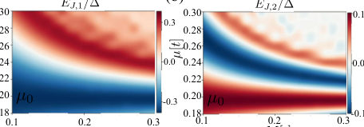
<figcaption class="paper-figure-caption"><b>Fig 5.</b> FIG. 5. (a) and (b) shows the Fourier coefficients EJ,1, EJ,2 change with chemical potential and AM strength M.</figcaption>
</figure>
</div>

<p><strong>Summary.</strong> This paper proposes using a superconductor/altermagnet/superconductor junction as a highly scalable, gate-controlled platform for parity-protected qubits. By exploiting the momentum-dependent spin splitting in altermagnets, researchers can electrically tune the Josephson coupling through a $0-\pi$ transition. This method eliminates flux noise sources and promises coherence times suitable for quantum computation.</p>
<p><strong>Why it may be interesting.</strong> This work directly addresses a major bottleneck in superconducting quantum computing by proposing an all-electrical control mechanism that leverages novel magnetic materials (altermagnets) to engineer protected qubit states.</p>
<details>
<summary>Detailed structure</summary>
<p><strong>Main problem.</strong> The primary challenge is developing superconducting qubits with long coherence times that eliminate the need for external magnetic-flux biasing, which introduces noise and limits scalability.</p>
<p><strong>Main result.</strong> The authors demonstrate that using an altermagnetic Josephson junction allows for fully gate-controlled operation, achieving estimated coherence times up to tens of milliseconds while maintaining parity protection.</p>
<p><strong>Method.</strong> The theoretical framework involves modeling the system Hamiltonian via a tight-binding approach and solving the Bogoliubov-de Gennes (BdG) equations to determine the Josephson potential and qubit energy spectrum.</p>
<p><strong>Model / system.</strong> The physical platform is a superconducting qubit realized using an Altermagnet-Josephson Junction (SC–AM–SC). The altermagnets provide spin-dependent functionality without external fields, allowing electrical tuning of the junction's phase via chemical potential ($\mu$).</p>
<p><strong>Key observables.</strong> Qubit splitting ($E_{01}$), coherence times ($T_1, T_2$), and the evolution of the Josephson potential through a $0-\pi$ transition.</p>
<p><strong>Important parameters / regimes.</strong> Gate-tunable chemical potential ($\mu$), offset charge ($n_g$), altermagnetic coupling strength ($M$), and charging energy ($E_c$).</p>
<p><strong>Assumptions / limitations.</strong> The analysis relies on the low-energy limit of the AM region, assuming $M \ll t$ and $\Delta \ll \mu$, and initially focuses on the 1D geometry for simplification.</p>
<p><strong>Figures summary.</strong> Figures illustrate the physical setup controlled by gate voltages, the resulting double-well potential at the $0-\pi$ transition point, and the evolution of the Andreev bound-state spectrum and Josephson potential harmonics as a function of tuning parameters.</p>
<p><strong>Paper structure.</strong> The paper introduces the problem (flux noise), proposes the SC–AM–SC junction utilizing altermagnetism for electrical control, details the theoretical modeling using BdG/tight-binding methods to analyze the $0-\pi$ transition and resulting double-well potential, and finally calculates coherence times based on charge and chemical potential noise.</p>
</details>
<details>
<summary>Abstract</summary>
<p>Parity-protected superconducting qubits offer intrinsically long coherence, but many current implementations require magnetic-flux biasing, which introduces flux noise, control overhead, and limited scalability. Here we propose a parity-protected qubit based on a gate-tunable superconductor-altermagnet-superconductor Josephson junction. Altermagnets are compensated magnets with momentum-dependent spin splitting and zero net magnetization, providing spin-dependent functionality without external magnetic fields. In the proposed junction, the two spin sectors acquire opposite phase shifts, generating two Josephson channels whose interference is controlled electrically by the chemical potential. At the tuned $0$-$π$ transition, the first Josephson harmonic is strongly suppressed while the second harmonic dominates, yielding a double-well potential with two nearly degenerate states of opposite Cooper-pair parity. For realistic gatemon-compatible parameters, we estimate coherence times of up to tens of milliseconds while maintaining fully gate-controlled qubit operations. These results establish altermagnetic Josephson junctions as a promising route toward protected superconducting qubits with local, scalable, and all-electrical control.</p>
</details>
<p><sub><a href="#top">↑ back to top</a></sub></p>

<p><a id="paper-2607.05296"></a></p>
<h3 id="semiconductor-nanofilms-as-thermal-phonon-polarizers-competing-effects-of-scattering-selection-rules-and-boundary-mode-conversion"><a href="http://arxiv.org/abs/2607.05296v1">Semiconductor nanofilms as thermal phonon polarizers: competing effects of scattering selection rules and boundary mode conversion</a></h3>
<p><strong>Authors:</strong> Vasumathy Ravishankar, Navaneetha K. Ravichandran<br>
<strong>Type:</strong> theory · <strong>Category:</strong> statistical mechanics · <strong>PDF:</strong> <a href="https://arxiv.org/pdf/2607.05296v1">https://arxiv.org/pdf/2607.05296v1</a><br>
<strong>Analysis basis:</strong> full PDF text, analyzed in chunks
<strong>Topic relevance:</strong> <code>methods for driven-dissipative</code> <strong>3/5</strong> · <code>non-equilibrium dynamics</code> <strong>3/5</strong> · <code>Keldysh / 2PI / non-Gaussian methods</code> <strong>1/5</strong> · <code>analog quantum simulation</code> <strong>1/5</strong> · <code>correlated / nonlocal dissipation</code> <strong>1/5</strong> · <code>driven-dissipative phase transition</code> <strong>1/5</strong> · <code>non-equilibrium universality</code> <strong>1/5</strong></p>
<div class="figure-strip-hint">↔ Scroll figures horizontally</div>
<div class="paper-figures-scroll">
<figure class="paper-figure-card">

<figcaption class="paper-figure-caption"><b>Fig 1.</b> FIG. 1. Acoustic phonon dispersions of InP and BP along the Γ →X high symmetry direction. The phonon dispersions along other high-symmetry directions for these materials are shown in Supplementary Figs. S1(a)-(b). LA and TA phonon dispersions are farther apart in InP than in BP, thus activat- ing the AAA # 2 selection rule in InP [2].</figcaption>
</figure>
<figure class="paper-figure-card">
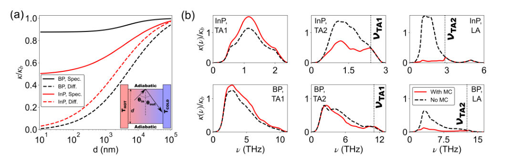
<figcaption class="paper-figure-caption"><b>Fig 2.</b> FIG. 2. Effect of mode conversion on the κ of BP and InP thin films at 100 K. (a) Thin film κ of BP and InP vs. thickness (d) normalized by the corresponding bulk values (κb) at 100 K. The inset shows the simulation geometry, and the incidence (θin) and the reflection (θout) angles for a phonon undergoing mode conversion at the thin film boundary. For specular reflection without mode conversion, the κ’s of thin films are equal to κb, independent of d [20]. When mode conversion is allowed, the predicted κ’s for specular reflections decrease faster with d in InP than in BP. For diffuse reflections, the predicted κ (d)’s remain the same with or without mode conversion in both materials, hence...</figcaption>
</figure>
<figure class="paper-figure-card">

<figcaption class="paper-figure-caption"><b>Fig 3.</b> FIG. 3. The normalized material factor Dλvλ of the mode conversion probabilities in InP (a) and BP (b). The x-axis is truncated at the maximum ν of the TA2 branch, beyond which mode conversion does not occur for the LA phonons [Fig. 2 (b)], since DTA1 λ = DTA2 λ = 0. In both materials, Dλvλ is much larger for the TA phonons than for the LA phonons, with the contrast being greater for InP than BP, due to the large velocity differences of the phonon polarizations in the former.</figcaption>
</figure>
<figure class="paper-figure-card">
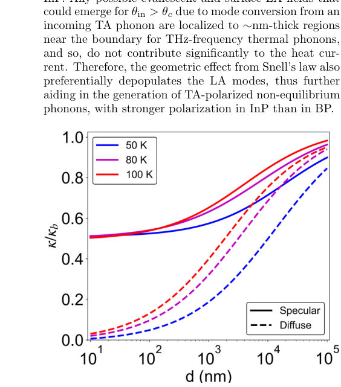
<figcaption class="paper-figure-caption"><b>Fig 4.</b> FIG. 4. Thickness-dependent κ of InP films at different cryo- genic temperatures scaled by κb. When phonons undergo specular reflections with mode conversion, κ/κb saturates at larger d as T is lowered, due to the longer phonon MFPs at lower T. For diffuse reflections, mode conversion has no effect on κ (d) /κb.</figcaption>
</figure>
</div>

<p><strong>Summary.</strong> This work analyzes how phonon scattering rules interact with boundary reflections in semiconductor nanofilms, leading to unique mode-polarized heat currents at low temperatures. By simulating these competing effects using first-principles methods, the authors show that this polarization allows for unprecedented control over phonon coupling compared to bulk materials.</p>
<p><strong>Why it may be interesting.</strong> While focused on phonons (lattice vibrations), the concept of non-equilibrium energy transport and symmetry-selective coupling is relevant to understanding heat dissipation in quantum devices or open quantum systems where boundaries play a crucial role.</p>
<details>
<summary>Detailed structure</summary>
<p><strong>Main problem.</strong> The paper investigates how phonon scattering selection rules compete with boundary mode conversion effects to modulate heat flow in nanoscale semiconductor films.</p>
<p><strong>Main result.</strong> This competition leads to phonon mode-polarized heat currents, enabling symmetry-selective engineering of phonon coupling that is difficult to achieve in bulk solids.</p>
<p><strong>Method.</strong> The study uses first-principles calculations solving the steady-state Peierls-Boltzmann equation (SSPBE) via a variance-reduced Monte Carlo approach.</p>
<p><strong>Model / system.</strong> The physical system involves semiconductor nanofilms, specifically InP and BP, where heat transport is governed by phonon scattering mechanisms at cryogenic temperatures. The model explicitly accounts for intrinsic selection rules and extrinsic boundary reflections/mode conversions.</p>
<p><strong>Key observables.</strong> Thermal conductivity ($\kappa$), phonon mode-polarized heat currents, LA and TA phonon contributions.</p>
<p><strong>Important parameters / regimes.</strong> Cryogenic temperatures ($\le 100$ K), film thickness ($d$), material type (InP vs BP).</p>
<p><strong>Assumptions / limitations.</strong> The Relaxation Time Approximation (RTA) is used; boundary conditions model conserving incoming/outgoing heat fluxes normal to adiabatic boundaries.</p>
<p><strong>Figures summary.</strong> Figures show the dependence of thermal conductivity ($\kappa'$) on film thickness ($d$), comparing scenarios with and without mode conversion, and illustrate spectral contributions to $\kappa$ normalized by bulk values.</p>
<p><strong>Paper structure.</strong> The paper builds from established knowledge of phonon selection rules in bulk solids to model the competition between these rules and boundary mode conversion effects in thin films, culminating in predictions for engineered thermal properties.</p>
</details>
<details>
<summary>Abstract</summary>
<p>Phonon scattering selection rules are known to control heat flow through bulk solids. Here we show that these selection rules also modulate heat flow through nanoscale semiconductor films, although through a previously-unexplored mechanism. Using first-principles calculations, we expose a competition between these selection rules and phonon mode conversion at boundaries of nanoscale films, that drives mode-polarized heat currents at cryogenic temperatures ($\le$ 100 K). This polarizing effect is stronger in materials like indium phosphide, where selection rules based on large velocity differences between phonon branches amplifies the longitudinal acoustic (LA) phonon contribution to thermal conductivity by restricting their intrinsic scattering events, while boundary mode conversion in nanoscale films suppresses it by depopulating the LA phonons. The resulting transverse-polarized non-equilibrium phonons will enable symmetry-selective engineering of phonon coupling to electrons, strains and defects in nanoscale films, that is difficult to achieve in bulk solids.</p>
</details>
<p><sub><a href="#top">↑ back to top</a></sub></p>

<p><a id="paper-2607.04266"></a></p>
<h3 id="phase-factor-controlled-interaction-and-bonding-between-a-chiral-bobber-and-a-skyrmion-string-in-the-conical-phase"><a href="http://arxiv.org/abs/2607.04266v1">Phase-Factor-Controlled Interaction and Bonding between a Chiral Bobber and a Skyrmion String in the Conical Phase</a></h3>
<p><strong>Authors:</strong> Haijun Zhao, Tingting Yan, Shuai Dong<br>
<strong>Type:</strong> theory · <strong>Category:</strong> other · <strong>PDF:</strong> <a href="https://arxiv.org/pdf/2607.04266v1">https://arxiv.org/pdf/2607.04266v1</a><br>
<strong>Analysis basis:</strong> full PDF text, analyzed in chunks
<strong>Topic relevance:</strong> <code>exotic spin models in light-matter</code> <strong>3/5</strong> · <code>spintronics-quantum-optics interface</code> <strong>3/5</strong> · <code>Keldysh / 2PI / non-Gaussian methods</code> <strong>1/5</strong> · <code>analog quantum simulation</code> <strong>1/5</strong> · <code>driven-dissipative phase transition</code> <strong>1/5</strong></p>
<div class="figure-strip-hint">↔ Scroll figures horizontally</div>
<div class="paper-figures-scroll">
<figure class="paper-figure-card">
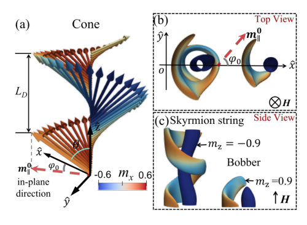
<figcaption class="paper-figure-caption"><b>Fig 1.</b> FIG. 1. Basic spin textures in the conical background. (a) Schematic illustration of the conical phase, whose surface phase factor ϕ0 selects a local in-plane reference direction. (b,c) Top and side views of an isolated skyrmion string and a chiral bobber embedded in the conical phase. The bobber has a length of approximately LD/2 and is localized near the bottom surface. The blue isosurfaces show mz = −0.9 and visualize the down-magnetized cores of the skyrmion string and the bobber, while the colored isosurfaces show mz = 0.9. The colors of the arrows in (a) and of the isosurfaces in (b,c) represent mx, indicating the in-plane orientation of the local magnetization.</figcaption>
</figure>
<figure class="paper-figure-card">
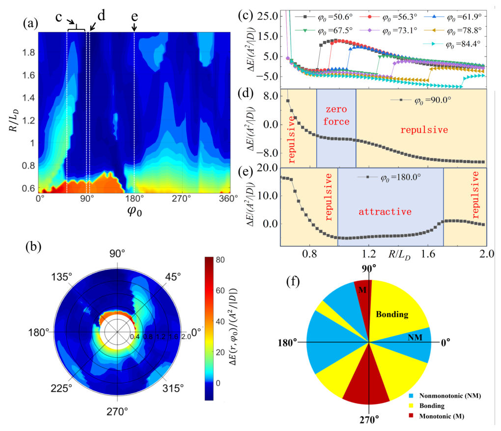
<figcaption class="paper-figure-caption"><b>Fig 2.</b> FIG. 2. Phase-factor-dependent bobber–skyrmion interaction landscape. (a) Contour map of the relative energy ∆E(R, ϕ0) in the separation–phase-factor plane. Only the range 0.58LD ≤R ≤2LD is shown in order to avoid the strongly repulsive short-distance region. (b) Polar representation of the same energy landscape, where the radial coordinate is R/LD and the polar angle is the conical phase factor ϕ0. (c–e) Representative one-dimensional energy cuts at fixed ϕ0, whose positions are marked in (a). (c) Consecutive cuts for ϕ0 = 50.7◦–84.4◦, showing abrupt branch switching into lower-energy states. The critical separation shifts to larger R and the jump magnitude decreases as ϕ0 increases. (d)...</figcaption>
</figure>
<figure class="paper-figure-card">

<figcaption class="paper-figure-caption"><b>Fig 3.</b> FIG. 3. Bonding transition and real-space shell reconstruction. (a) Representative bonding-sector energy cuts, with two configurations marked before and after an abrupt jump. (b,c) Corresponding 3D spin configurations. (d) Phase-shifted bonding sector with jumps around R ≃1.6LD. (e,f) Configurations before and after the jump marked in (d). The blue tubes show the mz = −0.5 core isosurfaces, and the colored mz = 0.8 isosurfaces, colored by mx, show the outer distortion shell. In (b,c), the jump forms a bridge-like connection between the upper skyrmion-string shell and the lower bobber–string composite distortion. In (e,f), the bridge-like connection forms mainly within the skyrmion-string...</figcaption>
</figure>
<figure class="paper-figure-card">

<figcaption class="paper-figure-caption"><b>Fig 4.</b> FIG. 4. Path-dependent relaxation across a representative bonding transition at ϕ0 = 50.6◦and H = 0.45HD, corre- sponding to the cut highlighted in Fig. 3(a). The relative energy ∆E is shown for the direct-relaxation method, the ap- proaching scan, and the separating scan, with arrows indicat- ing the scan directions. The different paths reveal hysteresis- like branch dependence and support the coexistence of un- bonded and bonded locally relaxed states.</figcaption>
</figure>
<figure class="paper-figure-card">

<figcaption class="paper-figure-caption"><b>Fig 5.</b> FIG. 5. Field dependence of the phase-factor-dependent bobber–skyrmion interaction landscape. The three columns cor- respond to H = 0.45HD, 0.55HD, and 0.60HD, respectively. (a,d,g) Contour maps of the relative energy ∆E(R, ϕ0) in the separation–phase-factor plane. (b,e,h) Angular energy profiles at two representative separations, R = LD and R = 1.8LD. (c,f,i) Polar representations of the corresponding energy landscapes, where the radial coordinate is R/LD and the polar angle is ϕ0. Increasing magnetic field suppresses the angular modulation and weakens the bonding sectors.</figcaption>
</figure>
</div>

<p><strong>Summary.</strong> This work uses micromagnetic simulations to map the interaction energy between a chiral bobber and a skyrmion string in a conical magnetic phase. The key finding is that this interaction is not merely distance-dependent but is strongly controlled by an intrinsic surface phase factor ($\phi_0$). This phase control dictates whether the interaction is repulsive, attractive, or leads to structural 'bonding' via shell reconstruction.</p>
<p><strong>Why it may be interesting.</strong> The concept of an external 'phase factor' ($\phi_0$) acting as a primary control parameter for magnetic interactions is analogous to controlling boundary conditions or relative phases in quantum systems, suggesting new avenues for designing topological materials via field/geometry tuning.</p>
<details>
<summary>Detailed structure</summary>
<p><strong>Main problem.</strong> The study investigates the interaction between a chiral bobber and a skyrmion string, demonstrating that this interaction is fundamentally dependent on the local phase factor ($\phi_0$) within the conical magnetic background.</p>
<p><strong>Main result.</strong> The interaction energy landscape cannot be described by a simple distance-dependent potential; instead, it exhibits distinct regimes (repulsive, attractive, bonding) controlled by $\phi_0$, which arises from structural reconstruction of outer spin shells.</p>
<p><strong>Method.</strong> Three-dimensional micromagnetic simulations were used to compute the constrained energy landscape ($\Delta E$) as a function of separation ($R$) and phase factor ($\phi_0$).</p>
<p><strong>Model / system.</strong> The system models magnetic films exhibiting bulk Dzyaloshinskii–Moriya interaction (DMI), supporting topological spin textures like skyrmion strings and chiral bobbers in a conical background state.</p>
<p><strong>Key observables.</strong> Interaction energy landscape $\Delta E(R, \phi_0)$, structural reconstruction of outer distortion shells, and the relative orientation parameter $\phi_0$.</p>
<p><strong>Important parameters / regimes.</strong> Separation $R$, surface phase factor $\phi_0$, magnetic field strength ($H$), and material parameters related to exchange/DMI.</p>
<p><strong>Assumptions / limitations.</strong> Dipolar interactions were excluded from the primary calculations to isolate the minimal mechanism governed by exchange, bulk DMI, and Zeeman energy.</p>
<p><strong>Figures summary.</strong> Figures illustrate contour maps of $\Delta E(R, \phi_0)$ showing three regimes (M, NM, Bonding); 1D cuts demonstrate repulsive/attractive sequences; and comparisons confirm top-bottom symmetry via phase transformation ($\phi_0 	o 180^\circ - \phi_0$).</p>
<p><strong>Paper structure.</strong> The paper establishes the physical context of skyrmion interactions, develops the micromagnetic simulation framework to map $\Delta E(R, \phi_0)$, analyzes the resulting three distinct interaction regimes (M, NM, Bonding), and concludes by confirming the phase-factor dependence through symmetry relations.</p>
</details>
<details>
<summary>Abstract</summary>
<p>Skyrmion interactions govern the formation of skyrmion lattices, clusters, and particle-like growth patterns. In contrast, the interaction between a chiral bobber and a skyrmion string remains largely unexplored, despite the role of bobbers as intermediate states in skyrmion-string formation and annihilation. Here we show that this interaction is intrinsically phase dependent in the conical phase. Using three-dimensional micromagnetic simulations, we compute the locally relaxed constrained energy landscape as a function of the bobber--skyrmion separation $R$ and the surface phase factor $φ_0$. We find that changing $φ_0$ qualitatively reshapes the interaction, producing repulsive, attractive, and bonding-like regimes that cannot be reduced to a conventional distance-dependent potential. Real-space analysis shows that this behavior originates from phase-dependent reconstruction of nonaxisymmetric outer distortion shells. The phase-controlled interaction persists over a finite field range and follows the expected top--bottom phase relation of surface-sensitive conical textures. These results identify the conical phase direction, often hidden in projected or thickness-averaged descriptions, as a previously underappreciated degree of freedom in the interaction between skyrmion strings and finite-length chiral textures, as demonstrated here for chiral bobbers.</p>
</details>
<p><sub><a href="#top">↑ back to top</a></sub></p>

<p><a id="paper-2607.05142"></a></p>
<h3 id="torsional-selection-rule-for-the-spin-orbit-conversion-of-light"><a href="http://arxiv.org/abs/2607.05142v1">Torsional selection rule for the spin--orbit conversion of light</a></h3>
<p><strong>Authors:</strong> Edilberto O. Silva<br>
<strong>Type:</strong> both · <strong>Category:</strong> other · <strong>PDF:</strong> <a href="https://arxiv.org/pdf/2607.05142v1">https://arxiv.org/pdf/2607.05142v1</a><br>
<strong>Analysis basis:</strong> full PDF text, analyzed in chunks
<strong>Topic relevance:</strong> <code>interference shaping light</code> <strong>3/5</strong> · <code>quantum optics experiment</code> <strong>2/5</strong> · <code>analog quantum simulation</code> <strong>1/5</strong> · <code>exotic spin models in light-matter</code> <strong>1/5</strong> · <code>spintronics-quantum-optics interface</code> <strong>1/5</strong></p>
<div class="figure-strip-hint">↔ Scroll figures horizontally</div>
<div class="paper-figures-scroll">
<figure class="paper-figure-card">
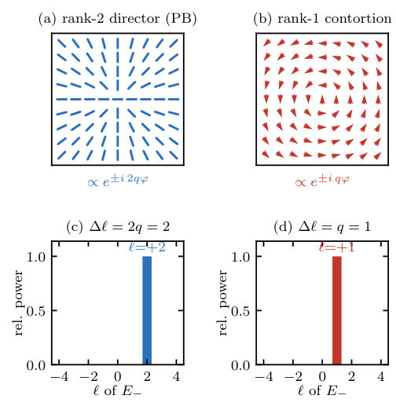
<figcaption class="paper-figure-caption"><b>Fig 1.</b> FIG. 1. The selection rule distinguishes the rank of the me- diating field. (a) A Pancharatnam–Berry element couples the circular components through a rank-two director texture of charge q; the coupling winds as e±i2qφ. (b) A torsional (Riemann–Cartan) medium couples them through the rank- one contortion vector, which winds as e±iqφ. (c),(d) Simu- lated OAM spectra of the converted beam E−for the same texture charge q = 1 and identical coupling magnitude: the sideband appears at ℓ= +2 (PB) versus ℓ= +1 (torsional).</figcaption>
</figure>
<figure class="paper-figure-card">

<figcaption class="paper-figure-caption"><b>Fig 2.</b> FIG. 2. Torsional vortex generation (q = 1). (a) Phase of the converted field at z = 25 w0: a stable, charge-n=+1 spiral. (b) Conversion η = P−and mean OAM versus propagation distance; both saturate at 0.83. (c) Final conversion versus holonomy strength κ0: a broad maximum (η ≃0.85) with no fine-tuning; in every run the charge is quantized at n = +1. Full sweeps in (κ0, Γ0), paraxial parameter k0 = 8–64, and grid refinement are given in the SM [27].</figcaption>
</figure>
<figure class="paper-figure-card">

<figcaption class="paper-figure-caption"><b>Fig 3.</b> FIG. 3. Proposed discriminator. (a) A circularly polarized Gaussian traverses a femtosecond-written lattice with a screw- dislocation texture of charge q (L ≃5 mm at δn ∼10−3); the output is helicity-sorted and its OAM measured. (b) Predicted OAM of the converted beam versus texture charge, from full simulations of Eq. (2) (circles) and of a PB-type rank-two coupling of identical magnitude (squares): slopes 1 and 2, with no overlap at any integer q.</figcaption>
</figure>
</div>

<p><strong>Summary.</strong> This paper introduces a novel mechanism where light's spin can convert into orbital angular momentum (OAM) via material torsion, yielding the selection rule $\Delta\ell=q$. This contrasts sharply with the standard Pancharatnam–Berry effect ($\Delta\ell=2q$). The authors confirm this theoretically and propose an experiment using patterned photonic lattices to measure this distinct signature.</p>
<p><strong>Why it may be interesting.</strong> This work provides a clean, geometrically derived physical mechanism for light-matter interaction that deviates from standard optical models, offering a new platform to probe fundamental concepts like geometric torsion in photonics.</p>
<details>
<summary>Detailed structure</summary>
<p><strong>Main problem.</strong> The paper aims to distinguish between two mechanisms for converting light's spin angular momentum (SAM) into orbital angular momentum (OAM): the standard Pancharatnam–Berry (PB) mechanism and a novel process mediated by geometric torsion.</p>
<p><strong>Main result.</strong> Torsion predicts a selection rule $\Delta\ell=q$, which is distinct from the PB prediction of $\Delta\ell=2q$. This difference can be experimentally verified using polarization-resolved photonic lattice discriminators.</p>
<p><strong>Method.</strong> The authors use paraxial simulations to confirm the theoretical selection rules and propose an experimental setup involving femtosecond-written photonic lattices for measurement.</p>
<p><strong>Model / system.</strong> The system involves light propagating through a medium exhibiting geometric torsion, modeled using Riemann–Cartan geometry. The dynamics are governed by an effective paraxial Maxwell model coupling circular polarization to spatial structure via contortion and torsional phase rates.</p>
<p><strong>Key observables.</strong> The ratio of measured OAM ($\ell$) versus the independently written texture charge ($q$); sideband positions showing slopes of 1 (torsion) vs. 2 (PB).</p>
<p><strong>Important parameters / regimes.</strong> Texture charge $q$, conversion efficiency $\eta \approx 83\%$, and the topological quantization of the resulting vortex ($\ell=+q$).</p>
<p><strong>Assumptions / limitations.</strong> The model assumes the coupling is linear in the written contortion vector for the proposed experiment, and it contrasts the torsion mechanism with the standard PB director formalism.</p>
<p><strong>Figures summary.</strong> Figure 3 predicts that OAM vs. texture charge plots will show non-overlapping sidebands: $\Delta\ell=q$ for torsion and $\Delta\ell=2q$ for PB coupling.</p>
<p><strong>Paper structure.</strong> The paper first establishes the theoretical difference in selection rules ($\Delta\ell=2q$ vs. $\Delta\ell=q$) based on the underlying geometry (director vs. contortion). It then presents paraxial simulations confirming the torsional rule and concludes by proposing a concrete, polarization-resolved discriminator experiment.</p>
</details>
<details>
<summary>Abstract</summary>
<p>Standard Pancharatnam-Berry and linear-birefringent media convert optical spin into orbital angular momentum (OAM) through an anisotropy \emph{director}, a rank-two, headless field, and therefore obey the selection rule $Δ\ell=2q$ per unit texture charge $q$. We show that a medium with geometric \emph{torsion}, the continuum limit of a screw-dislocation array, can convert spin to OAM through the \emph{contortion} of its material connection, which enters the effective paraxial dynamics as a rank-one vector field. The resulting selection rule is $Δ\ell=q$. Its winding is fixed by geometry and symmetry, not by a Pancharatnam--Berry director, and the process conserves the screw charge $\tilde J_z=L_z+(q/2)σ_z$ while exchanging $(2-q)\hbar$ of angular momentum per converted photon with the defect lattice. Paraxial simulations confirm the rule: a circular Gaussian input develops a stable, topologically quantized $\ell=+q$ vortex in the reversed helicity, with $83\%$ conversion over three Rayleigh ranges and no fine-tuning. We propose a polarization-resolved photonic-lattice discriminator in which the slope of the measured OAM versus the independently written texture charge, one for torsion, two for birefringence, separates the two mechanisms.</p>
</details>
<p><sub><a href="#top">↑ back to top</a></sub></p>
<hr>
<p>
<a href="index.html">← Index</a>
 · <a href="papers_07.html">← Previous</a> · <a href="papers_09.html">Next →</a>
</p>
<hr>

</body>
</html>
